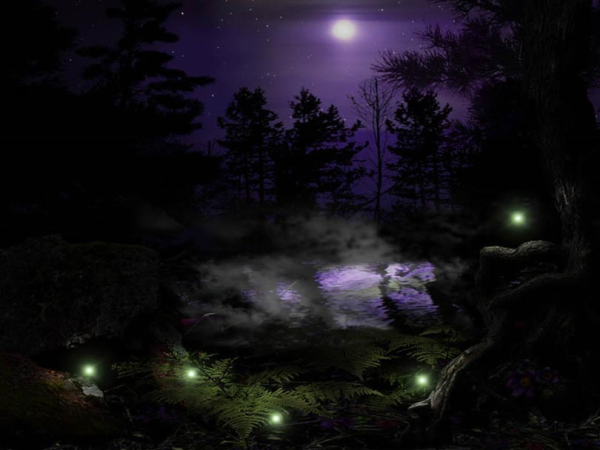

Среди камышей
Там, где ты бродишь среди камышей
Темная ночь не совсем уж темна
Тысячи сказок за тысячи лет
Дремлющая в звездах, шепчет нам луна...
(Песня Мурчанны)

- Осторожно, здесь коряга... так. А сейчас сверху будут свисать водоросли.
Чёрный человек имел кошачью реакцию. В последний момент он успел отдернуть журналиста, чтобы тот не запутался в декорациях.
- Да уж, жутковато тут у вас...
- В нашем ночном театре бывают самые невероятные постановки.
- Судя по декорациям - ужастики, верно?
- Горячо. Скоро вы все узнаете. Осторожнее, сгнившее дерево.
В полутьме человек в чёрном плаще вел Тадеуша Матеаха, журналиста по профессии, по узкой тропинке в мастерски выполненных дебрях за кулисами древнего театра, приоткрывая его внутренние механизмы. Хитрые умы разработали эти ярусы и многоуровневые туннели, чтобы зритель из своего кресла наблюдал волшебство смены декораций.
- Да, признаюсь, мне всегда было интересно поглядеть своими глазами, что происходит по ту сторону кулис. И ваше предложение посмотреть работу механизмов сцены пришлось очень кстати. Хотя, не подумал бы, что вы так просто раскрываете свои секреты.
- Не всем. Но для вас мы готовы сделать исключение.
- Судя по декорациям - представление получится отменным.
- Надеюсь, оно оправдает ваши ожидания. Осторожней же... Здесь у нас русалка. Топит незадачливых туристов, которые приходят выведывать наши тайны. Шучу.
Журналист пригнулся и прошел полубоком мимо русалки с одной стороны и оскалившихся шестирёнок с другой, словно по узкому перешейку между сциллой и харибдой.
- Тэд, вы по праву заслужили узнать наши тайны. Вы ведь настоящий правдолюб, верно? Ни перед чем не остановитесь, чтобы раскрыть правду. Вы мне нравитесь.
- Увы, не все разделяют ваше мнение, - ответил журналист, наигранно вздохнув, - кое-кто называет нас мерзавцами из желтой прессы.
- И считают, что вы на всё готовы ради славы и гонорара, - подхватил чёрный человек, - критикуют вас за скандальные разоблачения, в результате которых всплывает непреглядная правда. Даже поговаривают порой, что вы - вампиры, которые наживаются на чужих бедах.
- Что только о нашем брате не говорят...
- Но ведь мы-то знаем, что так думают только нищие неудачники, которые из-за своей лени и косности ума ничего не достигли. И чтобы как-то оправдать свое существование они начинают рассуждать о духовных ценностях. Разве не так?
- Вот-вот... заглядывают в чужой кошелек с завистью, вместо того, чтобы самим себя сделать. Мир хищный, в нем надо биться за место под солнцем. Вокруг все только и мечтают вцепиться в горло и все отобрать.
- Не так давно в результате ваших разоблачений погибла девушка. Не смогла жить, когда все узнали о той правде, которую вы откопали. Приняла какой-то яд.
- Вы говорите о певице Лучане?
- Да, о ней самой. Подумать... бывает же такое. В ранней юности совершить преступление, а потом всю жизнь корить себя. Начать помогать больным и немощным, переводить деньги в больницы и детские дома - лишь бы заглушить муки совести, единственного свидетеля нераскрытого преступления. А потом бац - появляется журналист, который дотошно проводит археологические раскопки в чужом прошлом. Ведь она же совершила преступление - должна отвечать. Правда должна быть известна всем! Вы молодец, мой друг. Другой бы еще подумал, стоит ли публиковать этот материал. Может, дать преступнице второй шанс, совесть достаточно её наказала? Война, всеобщая растерянность - отговорки. Кто угодно мог бы начать сомневаться, но не вы - вы стойкий, чужие слезы не проймут вас.
- Все должны отвечать по заслугам, - кивнул Тэд, - Ой, что это? Там кто-то есть?
- Ах, не беспокойтесь. Это лишь Бормочущее Болото. Звук издают пузырьки, поднимающиеся со дна. Почти как в аквариуме. Да ступайте же смелее. Это же лишь декорации. У нас еще никто здесь не тонул.
- А выглядит натурально...
- Еще бы. У нас такие мастера стараются... Скажите, Тэд, а вы сами хотели бы поучаствовать в сегодняшнем спектакле?
- Звучит заманчиво, - скромно заметил журналист, в то время, как они входили в искусственные джунгли.
Тэд вздрогнул. Казалось, что джунгли притаились в полудреме, ожидая свою жертву. Словно спящие чудовища, свисали декорации плотоядных растений и весь этот органично сплетенный мир был готов проснуться, как по команде, стоило лишь воткнуть вилку в разетку. Будто пес на цепи, он ждал команды, чтобы сорваться и торжествовать, охотять, царапая, жаля, наслаждаясь...
- В таком случае, по рукам. Ваш персонаж, как и вы, любит докапываться до правды. И получит её сполна. Предстоит одно интересное разоблачение. Не всё же вам разоблачать политиков и звёзд. Хотя, у вас лихо получается: взять хотя бы эту звездную семейку, которая недавно распалась благодаря вам.
- Сынишку их жаль, - сказал равнодушно журналист.
- Неужто? Скажите, Тэд, вот только давайте на чистоту - что уж таить, старина, вас хоть иногда мучает совесть за то, что вы творите?
- С какой стати? Я же борюсь за правду - я не из тех крикунов, которым необходимо устроить скандал вокруг известной персоны, чтобы заработать на репортаже. Они же очернят даже самого Бога.
- И обелят Дьявола. Правда ваша.
Они продолжали идти по джунглям. На Тэда вылупилась гигантская жаба с монеткой в зубах.
- Потрясающе. Вот это декорации! Если бы я встретил эту жабу в темном переулке, признаюсь, я бы испугался.
- Надеюсь, наш спектакль предоставит Вам такой шанс - немного испугаться. Хотя вы человек с крепкими нервами. И умеете скрывать свои чувства и мысли. Это уж я сразу понял. Если вы примете наше предложение поучаствовать в сцене - вы увидите своими глазами, как работают эти монстры.
- К сожалению, из меня очень плохой актер.
- В этом я сильно сомневаюсь...
Тэд не почувствовал колкой интонации. Он был слишком поглощен собой и тем, какое впечатление он производит. Он продолжал играть хорошо изученную за эти годы роль.
- Вы сыграете самого себя.
- Значит, спектакль будет отчасти правдивым, так?
- Конечно.
А между тем, чёрный человек про себя прошептал:
- Смотри уж, раз решил забраться на задворки чужой души. Просто так в чужую душу лезть не стоит - можно наткнуться еще не на таких монстров. Смотри же, изучай, как мы плетём узоры ночных кошмаров.
При этом вслух произнес:
- А сейчас, я покажу вам еще одно сокровище наших джунглей. Это ловушка. Не настолько зрелищная, зато надежная. Да не оборачивайтесь вы так, сейчас все увидите. Жертва и глазом не успевает моргнуть, все происходит настолько быстро. Кто-то за кулисами нажимает на красную кнопку - и.. ах! Подо мхом открывается отверстие и несчастная жертва падает на мелкие шипы, - Чёрный человек театрально взмахнул рукой, - Они не причиняют вреда, но в них содержится усыпляющий яд. Через шесть секунд жертва теряет сознание и умолкает. Жалостное зрелище, поверьте. Но если снимать замедленной съемкой - получается эффектно.
- Было бы интересно поглядеть. И кто же, согласно сценарию, будет жертвой?
- Вы, Тэд.
Чёрный человек сказал это без тени усмешки и нажал красную кнопку, которая пряталась за одной из веток. Ни один мускул на его лице не дрогнул. Недолго пришлось созерцать, как Тэд, пронзительно крича, провалился в раскрывающуюся пасть, которая проснулась после долгого сна, голодная, наполненная желанием охотиться и наслаждаться добычей.
Все так же невозмутимо под проклятия и угрозы он досчитал до шести. Крики стихли.
Джунгли снова превратились в спящие декорации.
Чёрный человек искренне огорчился, вспомнив, что его кофе эспрессо уже остыл. Он был настоящим ценителем кофе.
* * *
- Почему эти места называют "черными пятнами"? - спросил Чак у Зьи, которая вела его навстречу новому Эльдорадо.
- Потому что в них отказывает вся аппаратура. Говорят, здесь очень сильное электромагнитное поле или что-то в этом духе. Если вернемся, спросишь у умников из Ящика. Я таких премудростей не знаю.
Чак бросил недоверчивый взгляд на Зью - свою проводницу, которую ему порекоммендовали "знающие люди". Несколько часов назад он, молодой преуспевающий учёный, словно преступник, уносил ноги вместе со Зьёй от патрульных, охраняющих периметр.
В НИИ Ящике, как называли местные закрытый исследовательский институт, поговаривали, что где-то в Зарослях есть целая россыпь шаи хиша. Найдёшь такую - на утро проснёшься миллионером. Но Чак как и многие считал это сказкой до тех пор, пока не засёк по косвенным своим хитромудрым прибором небывалую концентрацию плазмоидов. По неизвестной науке причине, появление плазмоидов, в просторечии - блуждающих огоньков, всегда сопровождало россыпи шаи хиша.
- Вот скажи мне, девочка, это правда, что Заросли пропускают не всех? Многие так и бродят кругами по дремучему лесу в предбаннике, не находя тропинки? Или это вымысел?
- Отчего ж вымысел? - ответила кудрявая зеленоглазая девчонка, - правда. Не все находят путь в Междумирие.
"Ладно" - подумал Чак, - "если и впрямь знает, как пройти по болотам к лесу и не утонуть, на том спасибо. Места здесь такие, что без проводника лучше не соваться".
- А ты умеешь определять, где находится шаи хиш? - спросил Чак
- Дался он мне. Это очкарикам из института подавай черные шарики. Кстати, зачем он вам понадобился?
- Считай, что если нефть - это чёрное золото, то шаи хиш - чёрная платина, или даже еще круче. В нём столько энергии, что тебе даже не снилось. Научимся добывать его в промышленных масштабах, а еще лучше, если найдём способ синтезировать - про нефть можно будет забыть, - мечтательно ответил Чак. Затем мысли его вновь вернулись на землю, - Ты, кстати, хорошо знаешь дорогу?
- А что тут знать? - пожала плечами девочка, - надо идти, куда стекаются светляки.
Уже стемнело. Светляки летели над болотами в сторону гигантских папоротникообразных.
- Я не вижу ни одного плазмоида... светляка, пардон. Говорят, только дети и редкие взрослые их видят. Тоже самое с ультразвуком - взрослея, мы утрачиваем эти способности.
- Вы много чего утрачиваете - особенно здравый смысл, - резко ответила Зья.
- Ты всегда их видела?
- Сначала ты их чувствуешь. Все говорят, что их нет, поскольку никто не видит. Но если ты наберешься смелости и пойдешь против этой лавины чужого мнения - ты начнешь их видеть.
Чак понимал, что эта странная девчонка чувствовала себя главной в их экспедиции: от неё зависело - вернется он или нет. И сейчас он всего лишь балласт, который по возвращении должен выдать ей денежку. В ней ничего не осталось от той застенчивой девочки в зелёном свитере, которая смотрела на него своими огромными глазами и говорила полушепотом, называла его на "вы", как и подобает детям обращаться к старшим. Пока они шли, Зья совсем осмелела и даже начала подтрунивать над ним. И лицо её изменилось, будто повзрослело. Словно был какой-то подвох: женщина-актриса играла девчонку, вот только порой ошибалась, показывая реакцию взрослого человека, чем вызывала недоумение зрителя. При этом, в ней было что-то знакомое... как будто он видел её раньше. Но где? Странные они - эти местные ребята-проводники... их называют "дети Зарослей". Уже привыкшие к циничности окружающего мира, но при этом - всё-таки дети, рассказывающие про Заросли невероятные сказки.
- И куда же стекаются светляки?
Зья махнула рукой.
- Как я вижу, прямиком в болота... - проговорил Чак.
- Туда-то нам и надо. Пошли. Чего испугался? Болот никогда не видел? - усмехнулась девчонка.
Чак и Зья брели по болотам. Кто-то в свое время поставил на болотах табличку «опасно для жизни», которая утонула. Всплыла лишь ее часть со словом «жизни», и вокруг нее блестели несколько пар чьих-то выпученных глаз.
- Долго нам еще идти? - спросил Чак.
- А черт его знает.
- Понятно. Говорят, Заросли возникли после бомбежки. Когда-то здесь были самые обычные растения, однако на нас сбросили какую-то дрянь и они мутировали...
- Моя сестра еще помнит времена до войны, когда светило солнце и не было этих проклятых туманов и кислотных дождей, - ответила Зья, - а я всю жизнь наблюдаю это безобразие.
- Ты тогда была еще совсем маленькая, - ответил учёный, - не помнишь войны. А я вот уехал: здесь было не выжить. Жутко, когда мир раздирают на части. Вчерашние друзья становятся врагами.
Красноватое свечение кончиков огромных папоротников освещало августовскую ночь, к нему добавлялся золотистый блеск огоньков, то и дело мелькающих среди деревьев. Из кустов таращились мириады светящихся глаз. Блуждающие ягоды с тонкими вопросообразными стеблями провожали из немигающими взглядами.
Вдруг Зья резко остановилась как вкопанная.
- Слушай, не нравится мне здесь. Слишком тихо. Слышишь?
- Нет, - пожал плечами Чак.
- Знаешь, чего я думаю? Это похоже на ловушку.
- Какую еще ловушку?
- В Зарослях ловушка на ловушке. Поэтому возвращаются далеко не все. Множество искателей всех мастей увязло в этих болотах.
Внезапно ногу Чака обвил ус огромного вьюнка. Молодой учёный вскрикнул. Красный пряный цветок начал раскрываться на глазах. Зья подскочила к Чаку, выхватила нож и перерезала стебель. Цветок чихнул на них пыльцой и спрятался.
- Вот чертовщина! - воскликнул Чак, - мы точно попали в какую-то ловушку.
- Не мудрено! - ответила Зья, - я что тебе, хет возьми, обещала увеселительную прогулку? Никогда не слышал, что в Зарослях каждый пень, каждая коряга опасна?
В душе Чака тоже зародились сомнения. Правильно ли сориентировался его прибор? Может, он просто неверно расшифровал сигнал и принял за плазмоиды что-то другое?
Чак зевнул. Усталось сморила.
- Сейчас мы идем через хетовы болота. Одно из самых пренеприятных мест. Ты хоть знаешь, что делает Хет с теми, кто здесь засыпает? - насмешливо сказала Зья. Ей хотелось немного поиздеваться над учёным.
- Этих ваших сказок про Хета я уже наслушался.. пренеприятный тип, который забирается ночью в дома и крадет детишек из колыбелей. Может, хватит уже этого вранья? - ответил Чак.
Он попытался придать своему голосу как можно более равнодушный оттенок, но предательские интонации подвели его. Здесь, в чужом мире, где каждая коряга опасна, волей-неволей начнешь верить во что угодно.
- Ты и вправду думаешь, что Хет - это вранье? Хорошо, оставайся и проверь. Только потом, жаль, никому не расскажешь, чего ты видел. Эта гадина живет здесь в болотах и периодически ворует таких как ты.
- Кто-нибудь хоть его видел?
- Не самый умный вопрос. Они уже об этом не расскажут.
- Зато все прекрасно знают кто он и чем он занимается!
Чак споткнулся и упал. Зья помогла ему встать.
- А что потом? - спросил Чак словно Зья рассказывала ему страшилку.
- А потом суп с котом.
Они прошли еще немного.
- Слушай, давай привал устроим, - сказал Чак, который совсем выдохся, - есть хочется, да и вздремнуть охота.
- Здесь можно спать только попеременно, - ответила Зья, - кто-то всё время должен быть начеку. Взремни ты. Потом я тебя разбужу и отдохну сама.
Они нашли небольшой холмик, поросший мхом. Учёный буквально рухнул. По лбу катился пот. Отдышавшись, он вытащил припасы и спальник из рюкзака. После перекуса Чак залез в спальный мешок. Сон накатил мгновенно.
Спустя несколько часов Зья разбудила его и сама устроилась подремать, свернувшись калачиком.
- И только попробуй усни мне тут, пока я сплю, - сам выбираться будешь. Понял?
- Понял-понял, - кивнул Чак.
Делать было нечего и он начал бродить кругами вокруг холмика.
Внезапно он увидел, как невдалеке что-то сверкнуло. Подозрительно...
Неужто вновь ловушка?
Чак некоторое время бродил в нерешительности, но потом все же приблизился. Любопытство победило.
Когда смог разглядеть, что же там сверкало, то ахнул.
Вдалеке среди мха лежала россыпь шаи хиша, да такая россыпь, какую он в жизни не видывал. Огромные и маленькие черные шары, наполненные таинственной удивительной жидкостью.
Чак начал медленно приближаться среди болот к заветному Эльдорадо.
- Так так так. И кто это к нам пожаловал? - послышался звонкий голос из папоротников. В следующую секунду из-за холмика показалась девушка и усмехнулась при виде Чака. Ее снежно-белые волосы, переплетенные с плющем, падали на плечи, на голове красовался венок из тигровых лилий. Остальное ее одеяние составляли несколько веточек лиан, деревянные бусы, браслеты и абсолютно прозрачная туника. При виде ее учёный смутился. Девушка, видя его смущение, расхохоталась.
- Испугался, цыпленок? Я же не кусаюсь. А если кусаюсь, то не сильно
Девушка облизнула губы.
- Так что же тебя привело в эти болота?
Ее звонкий голос звучал как холодный ручей. Он решил отвернуться, но понял, что был совсем не в состоянии этого сделать, его вгляд был абсолютно прикован к этому созданию. Огромные зеленые глаза манили его подойти
- У меня здесь есть одно дело, - сказал Чак, замявшись
- Ах вот как... дело... Ну ничего, не убежит твое дело, - девушка стряхнула свои снежные волосы со лба, - посидишь в болоте, примешь ванну полезной грязи. Затем я тебя отпущу. Выглядишь измученным. Тебе надо часок подремать.
- Как-нибудь в другой раз, обещаю.
Нагота девушки его смущала, к тому же, это было как-раз то, чего он не ожидал увидеть. Чак ожидал встретить в Зарослях кого угодно - партизана в армейских штанах с высокими сапогами, прячущегося в яме или профессора в очках, который днем читал лекции, а ночью беспощадно убивал, методично вытирая кровь с ножа. Все что угодно, только ни эту нагую красотку.
Чак начал бороться сам с собой. Здравый смысл ему говорил: "Беги! Это и есть одна из тех ловушек, о которых рассказывала Зья", но другая его половина, иррациональная, умоляла подождать.
- Что вы делаете здесь на болотах, совсем одна и ...
- И в таком одеянии, ты хочешь сказать? А разве я не настолько безупречна, чтобы мне было, чего скрывать?
Девушка играючи встряхнула своими снежными волосами. Нет, это был ангел, одно очарование... разве такое существо было способно даже задумать что-то ужасное? А ее кожа.. должна быть слегка влажная после дождя и такая мягкая, такая ароматная...
- Нет, я вовсе не это имел в виду...
- Продолжай.
Девушка приблизилась к нему, он почувствовал ее дыхание и отшатнулся. В следующий миг он ощутил непреодолимое желание прижать ее к себе, потеряться в этих снежных волосах. Ее глубокие зеленые глаза так и манили приблизиться.
- Я имел в виду, что здесь довольно опасно.
- Вот как? И от чего же это?
"Может, она вовсе не желает сделать мне ничего дурного? В Зарослях вообще творится всякая чертовщина," - подумал Чак. В это так хотелось верить.
- Говорят, здесь живет какой-то сумасшедший, который крадет людей, - сказал он почти шепотом, забыв обо всякой осторожности.
Зеленые глаза девушки широко распахнулись.
- Может, вы слыхали о неком Хете, который здесь обитает? - спросил в полголоса молодой учёный.
- Вот нахал! - театрально воскликнула девушка.
Чак раскрыл глаза, но только потом понял, что последнее было обращено ни к нему.
- Нахал, подлец! А я-то ему верила... Как это было трогательно, когда он называл меня своим лягушонком, пока мы принимали полезные грязи, какие удивительные серенады мне пел, а ему подпевали лягушки и по всему болоту стояло счастливое квакание... обманщик! - ее глаза сначала застелила мечтательная пелена, затем последовал взрыв хохота.
- Так Вы знакомы с Хетом?
Девушка, казалось, игнорировала его вопрос.
- А как под полной луной мы наслаждались тишиной и томным бултыханием в болоте... вот такие вы, мужчины, обманщики... Что значит знакомы? А с чего бы мне его не знать? Словно быть знакомой с Хетом это уже преступление... А потом он зачерпнул немного полезной грязи...
- Так Хет существует?
- И чего тебе дался этот Хет? Лучше погляди, туман рассеивается... скоро взойдет луна.
- Говорят, что Хет похищает людей!
Глаза девушки снова расширились.
- Вот еще! И на что ему эти ваши люди? Так всегда - сидишь себе сидишь в норе - а про тебя уже начинают ходить слухи.
- Но тогда что, черт возьми, здесь творится?
- Да успокойся, что ты так волнуешься? Сейчас угощу тебя чаем. Люди как всегда не могут что-то поделить и топят друг друга в болоте. А потом списывают всё на сказочных персонажей.
Чак перестал прислушиваться к своему здравому смыслу. Ее мягкие интонации возвращали ему спокойствие, он чувствовал себя, словно ребенок, вырвавшийся из темной комнаты. И здесь, при дневном свете, все ужасы темноты стали глупыми и смешными.
- Это правда? - спросил он в надежде.
- Ну конечно, мой сладкий. Ты и вправду выглядишь каким-то утомленным. Наверно, давно не высыпаешься...
Чак уже не слушал, что она говорила, он лишь наслаждался этим звенящим горным ручейком не в силах оторвать взгляд. Ее голос, казалось, начинал его гипнотизировать.
- Вздремни на часок, проснешься бодрым.. а дело твое подождет.
Чак почувствовал, как на него нахлынула ужасная сонливость.
- Я еще вернусь, - он предпринял последнюю попытку к сопротивлению.
- Я лишь угощу тебя чаем с розовым маслом.
Девушка взяла его за руку, её кожа казалась бархатной и повела по болотам туда, где начинался таинственный лес. Там, в глубине, под веткой бледно-розовых роз в подвешенных на ветки старого дуба чашах кипел отвар и поднимался пар. Пахло розовым маслом.
Между крупными корнями дерева было углубление, такое удобное, чтобы сесть полулежа и отдохнуть. Чак не пропустил это удовольствие и вскоре девушка ему подавала уже пиалу с чаем, расчесывая его волосы. Сонливость почти сморила его, он решил на минутку прикрыть глаза. В следующую секунду его голова упала девушке на колени, она продолжала заботливо расчесывать его, наклонилась к его уху и прошептала
- Спи, пусть тебе снится удивительный сон... Не забудешь теперь Элодею.. Элодея тебя поймала, теперь она тебя не отпустит.
Воздух был наполнен пряными ароматами, в лесной тишине едва слышилось пенье птиц, девушка затянула колыбельную. Затем сквозь сон он почувствовал, как она наклонилась еще раз и его губ коснулся раздвоенный змеиный язык. Затем полное забытие.
* * *
Светало. Зья сладко потянулась.
- Болота, родимые, топь-матушка... наконец-то я дома, - пробормотала она про себя.
Затем резко подскочила.
"Где Чак?! Он же должен был разбудить меня до рассвета. Где его носит?"
Тщетно она бродила по болотам и звала молодого учёного.
Ответом ей были пузырьки, поднимавшиеся из болота.
"Утоп, гад... или в ловушку угодил. Просила же я ни на шаг не отходить...", - подумала Зья и на душе стало как-то противно. Всё же она его привела. Дурень он, несмышлёныш, хоть и взрослый... Теперь зелёненьких ей не видать. Да чёрт с ними, с зелёненькими... Все они слепые, хоть и зрячие. Нашелся вроде один, которому она хотела показать Междумирие - а он взял и утоп. Ведь если бы он увидел, какие здесь богатства, он бы забыл про свой шаи хиш!
Зья села на мягкий мох и тихонько заскулила, словно маленький зверёк - ну вот, одного-таки угробила... Хотя, говорят, это с каждым из наших проводников случается, и относиться к этому надо философски. Однако относиться философски не получалось.
Наступило туманное утро Междумирия.
Зья брела по болотам. Куда ни глянь - болотам не было конца. Все знают, что Бормочущие Болота - гиблое место, забредешь и не выберешься. А уж если они только начались - берегись! Сворачивай, уходи, пока еще не поздно.
Вот только свернуть было некуда. Как же её угораздило влипнуть в эту историю! И зачем она только связалась с этим дурнем, будь он проклят!
Болота начали чередоваться с островками, обвитыми шевелящимися корягами. Там и здесь виднелись жабьи грибы с светящимися красными крапинками.
Зья шла, отбиваясь от комаров, пока не дошла до развилки. А там была табличка с направлениями: направо - "Опасно для жизни", прямо - "Просьба не беспокоить" и налево. Надпись на ней была почти стерта. По неким причинам Зья предпочла именно этот путь. Между деревьями то и дело зажигались огромные желтые глаза, которые провожали её немигающими взглядами. Болота кончились и она шла через папоротники, наступая на мягкий мох, который пружинил под ногами.
В какой-то момент Зья почувствовала, что все вокруг притихло. Хищные желтые глаза больше за ней не следили. Идти по пружинящему мху доставляло удовольствие, Зья было принялась напевать песенку. Но вскоре затихла. Здесь было слишком хорошо и как-то слишком тихо. Как... в ловушке!
Последнее пришло ей в голову слишком поздно, когда мох уже предательски прогнулся под ногами и она начала куда-то проваливаться...
* * *
Хет покачивался в гамаке, допивая свой любимый отвар. Как раз в тот момент, когда дремота почти захватила его, он услышал, как кто-то провалился в его ловушку.
- Кого там еще принесло? - недовольно спросил он.
- Это я... - растерявшись ответил испуганный голос.
- Так я и думал. А поконкретнее можно?
- Где я?
- Вообще-то у меня дома. А ну-ка иди к огоньку, дай погляжу на тебя.
Из темноты вышла девчонка в кожанной куртке со слипшимися волосами. Хет по-прежнему оставался в темноте.
- Тебя вроде Зиана зовут?
- Да, - робко произнёс голос.
- Вы тут все болота перебаламутили. Ты хоть знаешь, что я делаю с такими как ты? Да уж уверен, знаешь... Сказок-то небось наслушалась.
- Кто вы?- спросила Зья у темноты, отряхивая листья, которые к ней прилипли после падения. Голос её дрожал, игра закончилась.
- Если скажу - не испугаешься?
- Нет, - проговорила Зья.
- Что ж, давай знакомиться. Хет.
Зья вздрогнула, оглядываясь по сторонам в поисках выхода.
- А говоришь, не испугаешься... Вообще, дам тебе совет. Когда ты наедине с хищником, кем-то, кого ты считаешь опасным, паниковать - последнее дело. Это еще больше разжигает инстинкт к преследованию. И знаешь, что я с тобой сделаю? - проговорил Хет мечтательно
Зья вжалась в стену.
- Да не бойся ты так. Иди сюда, угощу чаем с вареньем. Хоть познакомишься, поверишь, что я все-таки существую и что я - не просто ругательство. Я сегодня не злой. Точнее, я бы мог, конечно... - начал Хет все тем же мечтательным голосом, наблюдая за взлядом Зьи. Его явно забавлял её страх, - но мне лень. Так что давай обойдемся сегодня без привычного ритуала жертвоприношения, хорошо? Ты так и собираешься стоять? Садись.
Зья послушно села у огонька. Сердце еще быстро стучало, но мягкий голос из темноты оказывал на неё странное воздействие. Она уже не могла не подчиниться. Первоначальный страх проходил.
- Ладно хоть ты в меня веришь. Твой спутник - так тот вообще бодрым голосом утверждал, что меня не существует. Эх народ... - сказал насмешливо Хет.
Затем в темноте послышалось шевеление. Зья вся напряглась, ожидая, что вот-вот из темноты покажется чудовище.
Из темноты вышел коренастый человек неопределенного возраста. Единственно, что в нем было странно - поблескивающие желтые глаза. Черные слипшиеся волосы падали на лицо. Он зевнул, прикрыв рот рукой. Затем налил Зье чай.
- Ждала увидеть болотную гадину, не так ли? - сказал он все с той же усмешкой.
Зья потихоньку успокоилась. Знала бы она еще тогда, когда была маленькой, какой же на самом деле этот Хет... она бы не позволила столько лет взрослым пугать себя этим странным существом.
- Не отвечай. Знаю, много баек про меня ходит.
- А за что же они вас так боятся? - под конец спросила Зья
Хет смотрел в огонь
- Видишь ли.. Не со всеми я всегда был так добр, как с тобой.
- Это правда, что про вас говорят? - набравшись смелости, спросила Зья.
- Смотря что. Если про то, что я выкрадываю младенцев из колыбелей... я с этим завязал лет триста назад... теперь переключился на более больших... да шучу я. Не пугайся так.
Некоторое время они молчали. Чай остывал.
- И что ж тебя, Зиана, каждый раз приводит в Заросли?
- Здесь я дома, - пожала плечами Зья.
- А в том мире, за стеной? - спросил Хет, - у тебя есть дом?
- Был. Только я его совсем не помню. Когда я была маленькая, на него упала бомба. Чудом нас с сестрой дома не оказалось.
- А сейчас?
- Мы с сестрой живём у тётки.
Хет кивнул, покачивая головой.
"Зло падало с неба... Зло разрывало, уничтожало, разрушало связи. Однажды кто-то умер. Кто? Неужели напрасно?"
Вопросы без ответа.
Хет забрался в гамак и закурил кальян.
Некоторое время они говорили о том, о сём.
- А ты уверена, что тебя тогда дома не было? - спросил Хет.
Зья пожала плечами.
- Так сестра рассказывает. Я ничего не помню. Говорят, нас завалило тогда, врачи еле вытащили нас с того света. Да ладно, к чертям всё это. Ты о себе расскажи - кто ты такой-то на самом деле?
- Ты лучше скажи мне, кто ты, - сказал Хет вкрадчиво, - ведь ты забыла представиться. Что с тобой не так? Зиана Миджетович, сотрудница НИИ Ящика, неужели ты - маленькая девочка? Ты или та, другая, которая задремала в кресле, моделируя энергетические взаимодействия плазмоидов - кто из вас более настоящая? Сколько лет ты уже блуждаешь по болотам в поисках ответов на свои вопросы?
* * *
Хет сидел в трактире "Болотная орхидея" и пил кофе с корицей мелкими глотками, вдыхая его терпкий аромат.
Хромая Мойра за стойкой бара натирала бокалы до блеска. Когда бокалы кончились, она достала спицы и начала вязать в ожидании новых заказов.
Напротив него сидел журналист Тэд Матеах.
- Господин Хет, - всего лишь пару вопросов для прессы. Я вас надолго не задержу.
- Вам еще не надоело задавать вопросы? - усмехнулся Хет. - Вы не видите, я хочу выпить эту чашечку кофе в тишине. Могу я себе это позволить?
- Я думаю, это вас заинтересует, господин Хет. Могу я к вам так обращаться? Или стоит назвать ваше настоящее имя?
Хет посмотрел прямо в глаза собеседнику с легкой насмешкой, затем бросил взгляд в окно. За окном светящиеся блуждающие ягоды бродили по Бормочущим болотам.
- Вы шутите? Вот уж не думал, что я такая звезда, что вокруг меня возникают сплетни желтой прессы.
- А ведь я слишком долго распутываю эту историю... все те дни, что я сидел в ящике под сценой, я трудился не покладая рук, изучал материалы.
- Что ж, уже интересно. И что же вам удалось такое про меня узнать?
- Что ж... начну сначала... прошло несколько лет, за эти годы много чего переменилось, много чего уже позабыто. Только, как видно, позабыто не всеми.. А ведь в свое время вышла ужасная история, не правда ли, Хетиш Спендер?
Имя, которое давно уже никто не произносил, прозвучало угрожающе в тишине.
- Вы, мой друг, наверно, совсем не следите за событиями. Если вы имеете в виду известного учёного, первооткрывателя шаи хиша, то он давно умер, - сказал Хет все с той же легкой усмешкой.
- Что ж... для всех он умер. И я тоже долгое время в это искренне верил. Но факты.. они разбивают все иллюзии.
- Выпьете со мной кофе? - внезапно спросил Хет, - или желаете чего покрепче?
В трактире было влажно и душно - воздух пропитался кислотными дождями. По ногам бил сквозняк, а от обогревателя веяло тропическим жаром.
- Сегодня я ограничусь кофе, - ответил журналист,- но в последствии не откажусь пропустить с вами по стаканчику горячительного.
- Это замечательно. Я не поклонник спиртных напитков. А кофе у них сегодня просто божественный.
С этими словами Хет махнул рукой и к ним подошел официант на длинных тонких лапках. Пока они ждали кофе, журналист спросил:
- Я сначала недоумевал: неужели Грегор Мойрич, директор института и давний приятель Хетиша... замешан в его смерти? Но факты...
- Вот сенсация будет, правда, приятель? - спросил Хет. По лицу его пробежала кривая ухмылка.
- Он решил вас убить, чтобы завладеть вашей компанией?
- Не все так просто. Мы с Грегором, тогда еще обычные научные сотрудники, первыми осознали всю ценность шаи хиша. "Чёрная платина", слыхали? К тому же, уже тогда начали ходить слухи, что якобы шаи хиш излечивает тяжелые болезни. В те шальные годы еще не было стены вокруг Зарослей с патрульными. Город только приходил в себя после войны, никто ничего не знал. Я придумал, как на основе шаи хиша сделать генератор и продал несколько образцов. Затем еще и еще. Однажды утром я проснулся знаменитым. Деньги вскружили нам голову, это было словно во сне.
- Так что же произошло? Я считал, что причина случившемуся - банальная зависть, - спросил журналист.
В этот момент принесли кофе. В нос журналисту ударил манящий кофейный аромат.
- Однажды я узнал тайну. И поделился ей с Грегором.
- Тайну?
- Скажите, милейший, вы когда-нибудь задумывались, откуда берется шаи хиш?
- Нет... Я думал, это продукт, образующийся посредством естественной переработки растительных и животных остатков.. что-то вроде нефти. После сброса бомб и отравляющих веществ в природе что-то разладилось, вот и начали возникать подобные чудеса. Как, впрочем, и мутировавшие растения. Да что там говорить.. атмосфера после этого кошмара в нашем городе стала явно нездоровая. На этой почве многие начали сходить с ума - чего только очевидцы не рассказывали. Порой такое людям мерещилось... Якобы даже мертвяки выходили из Зарослей и уводили за собой живых. На этой волне появление шаи хиша не вызвало сенсации. Некий высокоэнергетический продукт...
- А разве это не так? - удивился Тэд.
- Вот и я когда-то так наивно полагал.
- Так из чего же он получается? - спросил журналист, глаза его вспыхнули.
- Подождите немного. Обещаю - скоро вы все узнаете.
- И за это они решили вас убить?
- Видите ли... если бы эту тайну узнали все, вполне возможно, что нашу компанию ждал бы крах. А так у нас с Грегором появилось столько перспектив - он уже метил на место директора института, к тому же, за каждую продажу нам капала хорошая денежка. А стоило бы тайне открыться - военка сразу бы все прибрала к рукам и нам с Грегором было бы нечего ловить. Они и так сейчас стремятся все засекретить, но прошло время и Грегор успел нажиться на шаи хише.
- В чём подвох? Шаи хиш ядовит?
- Не в этом дело. Я хотел рассказать правду людям. Но Грегор был против. Как-то раз в Зарослях он заманил меня на Черное озеро, в котором постарался меня утопить. Увы, такая правда жизни.
Журналист наигранно вздохнул.
- Я рад, что ему это не удалось.
- О, глядите, там за окном какая-то заваруха, - вдруг воскликнул Хет.
- Где? - журналист обернулся, пытаясь хоть что-то разглядеть в залитом дождем стекле.
- Да все, вроде прекратилось, - ответил Хет.
"Может, он хотел стукнуть меня по голове чем-то тяжелым, но не успел?" - промелькнула мысль у Тэда, но он сразу ее отмел. Здесь было слишком людно для этого.
- Как вам кофе? Хорош, неправда ли? - спросил Хет
- Вы были правы, - журналист сделал еще глоток, - кофе действительно хорош. Ну так вот: это еще не всё, что я раскопал. То, что произошло с Грегором позже - дело ваших рук. И у меня есть доказательства...
Журналист вынул из портфеля папку с бумагами, некоторые из них были с печатями, некоторые пожелтели от старости. Документы едва предприняли попытку к бегству, взмахнув крылышками бессвязных предположений, как Тэд ухватил их в ахапку за крепкие неопровержимые факты, стряхивая налипшие допущения и брызги кофе. Один из листков укусил его за палец, Тэд чертыхнулся.
- Браво, браво, мой друг, - рассмеялся Хет - Что ж, вынужден признать свой промах. Никогда бы не подумал, что меня так легко вывести на чистую воду.
- Поверьте, это было крайне нелегко.
- Что ж... можете считать меня злодеем.. А как бы вы поступили с теми, кто перечеркнул всю вашу жизнь? Ведь я бы мог прожить счастливую длинную жизнь. Но меня захотел убить это жалкий несчастный человек. Все из-за этих зеленых бумажек. Вы хоть знаете, что такое предательство того, кого ты считал другом? Вначале я пытался забыть. Начать все с чистого листа. Но оно все равно меня преследовало.
- Я понимаю.
- А мне кажется, не совсем... Неужели ты не замечаешь ничего странного? Где мы?
Тэд оглянулся по сторонам.
За соседним столиком сидел Жаб с маленькими жабенышами, а напротив него - дама с собачкой, которая обмахивалась веером. Все бы ничего, типичная картина викторианской эпохи, если бы ни эта собачка, которая держала в хвосте веер и обмахивалась. Кот с телом-гормошкой уселся рядом с ними. Все трое играли в преферанс. Собачка что-то старательно записывала в гору. Жаб шикнул на кота, дескать не жульничай, мошенник ушастый. Кот вопросительно мяукнул.
- Ничего не замечаю. Всё те же жабы и пьяные рожи как и всегда. Надо же им было так допиться и потерять человеческий облик... А мы... мы все в той же дыре.
За столиком в углу сидел шериф в широкополой шляпе и пил текилу. Шериф-кактус закинул ноги на стол, раскуривая длинную сигару. Периодически он выдергивал из себя иглы и пускал в лампочку над стойкой бара, словно играл в дарц. Посетители лишь успевали уворачиваться.
Присутствие представителя закона внушило Тэду уверенность.
- Как видишь, приятель, все пока идет, как я задумал, - подмигнул ему Хет, - Хотя есть небольшая сложность: ведь ты же раскопал мою тайну. А как же мне ее сохранить?
В голосе Хета проскользнула какая-то странная нотка. Журналист слегка вздрогнул. Но в трактире ему ничего не угрожало. Надо быть сумасшедшим, чтобы сейчас... да нет же, глупости.. показалось.
- Вижу, ты испугался? Я же вовсе не имел в виду то, что ты подумал. Так, размышления вслух...
- Я долго собирал информацию.
- Да, ты очень хорошо осведомлен. Я бы сказал - слишком хорошо... Вот только скажи мне.. что ты теперь собираешься делать с этими бумагами и со всем, что раскопал? Хочешь получить денег за сенсацию?
- Хочу. Хотя... черт возьми! Сложный вопрос. Хотите заплатить мне за молчание?
- А ты хочешь начать шантаж? - ответил Хет вопросом на вопрос, - честно, у меня и в мыслях не было платить. Но ведь разве вопрос нельзя решить по-иному?
В его голосе опять проскользнула какая-то странная интонация, заставившая журналиста вздрогнуть. Но в трактире было по-прежнему людно, на улице его ждало такси. Пока он будет ехать в редакцию, с ним ничего случиться не может... А дальше.... А дальше, материалы уже будут не у него.
- Господин Спендер, я порядочный человек. И не собирался вымогать деньги.
- Я в вас не сомневаюсь, мой друг. Ведь я же знаю, ты никогда никому ничего не скажешь. А хочешь, я открою тебе одну маленькую тайну? Еще одно темное звено в этой цепи. Уж, готов поспорить, этого ты не разгадал.
- С удовольствием.
- Как думаешь, где ты будешь встречать завтрашнее утро? Угадаешь?
- Спасибо за кофе... мне нужно срочно идти. Меня ждут - бросил журналист.
"Здесь, в трактире, он не посмеет...Я ведь тоже все продумал. Теперь у меня есть последнее доказательство. Запись разговора. Надо скорее добраться до редакции. Пора кончать игру Ва-Банк."
Хет ловким кошачьим движением схватил его за руку.
- Сегодня кофе у них слишком хорош. Может, последнюю чашечку? - сказал он вкрадчиво и мягко. В этот момент журналист почувствовал, как его собственные ноги перестали его слушаться. Он попытался подняться, но не смог. При этом голова его оставалась абсолютно ясная.
- Что со мной происходит? - встрепенулся он.
- Не беспокойся, дружище. Всего лишь нервно-паралитический яд. Он полностью парализует волю человека. Я подлил его в твой кофе, когда тебя отвлек. Чувствуешь, насколько тяжелым стал язык?
Журналист попытался встать, но у него ничего не вышло. Хотел закричать, но издал лишь слабый стон. В ужасе он глянул на Хета. Происходящее напоминало кошмар, в котором за человеком гонятся чудовища, а он увязает в болоте и не может шевельнуться.
- А теперь улыбнись. Не нужно, чтобы все пялились на твое испуганное лицо. Да. Это дилема. Но я ни перед чем не остановлюсь. Очень скоро тебе представится шанс узнать тайну шаи хиша. Это я тебе обещаю. И как вознаграждение я раскрою тебе все темные моменты этого дела. Ты будешь одним из немногих, кто будет знать всю правду до конца.
- Сколько можно сидеть? Закрываемся! - крикнула Мойра и подошла к их столику. Если бы она была чуть повнимательнее, она бы уловила в этой сцене чего-то помимо того, что два приятеля пьют кофе и задушевно беседуют.. Она уловила бы кричащий, почти умоляющий взгляд одного из них в сочетании с игрушечной улыбкой на лице. Но Мойра была слишком увлечена своими проблемами и ничего не заметила.
Напрасно таксист прождал еще несколько часов... Он видел, как из трактира среди прочих последних посетителей выходили двое полупьяных приятеля, обнявшись. Но он не узнал одного из них. Он спохватился лишь только тогда, когда трактир зевнул и закрылся, а тот, кого он ждал, так и не вышел из него.
- Напился до чертиков, - недовольно проворчало такси.
- Думаю, ты прав, старина, - пожал плечами водитель.
Мотор булькнул, и такси на длинных ногах побежало по болоту. Недовольные блуждающие ягоды кинулись врассыпную, чтобы их не забрызгало болотной жижей.
- Ишь ты, лихач! И куда смотрит полиция? - проворчал жабий гриб.
Таксист уже забыл о своём посетителе, выискивая следующий заказ. Ему не пришло в голову заподозрить неладное. В трактире не было драк и потасовок, а что может случиться с человеком в таком людном месте?
"Ну и хет с ним", - подумал он.
* * *
- Так что же дальше случилось с журналистом? - спросила Зья, делая глоток отвара из ароматных трав.
- Расскажу как-нибудь в другой раз, - сонно пробормотал Хет, выдыхая колечко дыма.
- Так кто ж ты всё-таки такой?
- Да так... вурдалак местный.
- Поговаривают, самый опасный персонаж Зарослей.
- Насчет опасного - сомневаюсь. Я, конечно, набедокурил я в своё время, но с тех пор прошло много лет. Здесь есть существа и поопаснее меня. Одна Элодея чего стоит - она ничуть не изменилась с нашего первого знакомства. Но есть существа еще более странные, с которыми я бы и сам не пожелал встретиться.
- В самом деле? - удивилась Зья
- На каждого хищника найдется другой хищник, более сильный и коварный.
- И кто же это?
Хет отвел глаза, затем усмехнулся.
- В своё время его называли "Тень Солнца". Бессмертный, недремлющий хищник. Бродит по Междумирию и выискивает себе жертв.
Глаза девушки блеснули.
- Неужто бессмертный? - воскликнула она.
- Поговаривают, что так.
- А вурдалаки - бессмертные?
Хет вновь усмехнулся.
- И да и нет. Зависит от того, как долго ты будешь готов бороться за своё бессмертие. Я оставил эту борьбу и наш мир потихоньку растворяет меня. Я хоть и вурдалак, но часть одного большого организма. Если ты за пределами Сердца, то становишься раковой клеткой - организм тебя отторгает. Сначала пытается спасти - если не помогает, то переваривает, делит на части. Так что и нам выживать не так просто.
- А есть те, кто выживает вне этого Сердца?
- Есть... они создают агломерации - размножаются, как раковые клетки. Наш мир борется с ними. Увы, но и в нашем мире есть опасности.
- Но почему ты не борешься? - удивилась Зья.
- Моя память - тяжёлый груз. Не хочу тащить её за собой. Постоянно нужно выдирать из неё сорняки, иначе не удержишь этот груз... Я устал, понимаешь? В нашем мире это особенно сильно чувствуется, когда спадает всё лишнее. Но с другой стороны - уходят опоры, которые поддерживали сознание. Если твоё сознание не готово - слишком просто скатиться в неосознанность.
- Я хочу быть бессмертной! Хотя бы получить такой шанс... - сказала Зья, - всю жизнь меня мучила мысль - как продлить свою жизнь. Ведь несколько десятков лет - это смехотворный срок. В детстве я мечтала изобрести эликсир бессмертия, поэтому, когда выросла, начала заниматься наукой. Да! Я хочу настоящее бессмертие - чтобы не потерять свою память. Иначе это тоже бессмысленно.
- Ну не совсем бессмысленно: останутся отзвуки памяти - переотражения. Опыт.
- Нет уж! Только сохранить всё полностью.
- Бессмертие - это тяжелое бремя. Постоянная, неустанная работа. Мучаться будешь, неприкаянная. А сядешь передохнуть - сзади подкрадётся Тень Солнца, вцепится огненными когтями и начнет пить твою кровь, изматывать. Ему всё мало: он будет требовать - вставай, иди, действуй!
- И всё же, - возразила Зья, - я готова сделать максимальную ставку в этой игре. Терять мне нечего. Я хочу стать бессмертной, как ты.
- Что ж, тогда навести Мурчанну. Иди за блуждающими огоньками. Они приведут тебя вглубь зачарованного леса. Там найдешь её хижину.
Некоторое время они молчали.
- И всё же, ты не прав! Надо бороться до конца, - ответила девушка.
- Когда есть за что... тебе не понять. Сначала соверши преступление, а потом учи других, как бороться и выживать внутри Сердца, - грустно усмехнулся Хет.
Зья ощутила нечто странное... нет, не жалость - скорее, симпатию с странному вурдалаку. Захотелось что-то сделать ради него, чтобы он выжил. Но что?
- Я другое не понимаю, - пожал плечами Хет, - что ты здесь делаешь? Как тебе удалось пересечь заветную черту Междумирия? Подобные вещи связаны с преодолением грани жизни и смерти. Уж не знаю, когда это произошло. Или произойдёт... в нашем мире время течёт нелинейно.
- Это как так?
- Они... те кто там, дальше, думают древовидными фразами, плетут мир с помощью своих мыслей, думают будущее на много столетий вперед, из которого вытекает прошлое.
С этими словами Хет встал, чтобы подбросить поленьев в своё логово.
- Я разыщу Мурчанну. А пока расскажи мне, что было дальше.
* * *
- Знаешь, Хетиш, а ведь я подумал - ты прав, - начал Грегор, - все равно тайна рано или поздно откроется. Будет лучше, если мы её сами раскроем сейчас, чем если ее потом раскопает какой-нибудь умник и начнет нас тыкать носом в то, что мы творим.
Спендер перевел глаза на приятеля. Они шли среди гигантских папоротников к Черному озеру.
- Я рад, Грегор, что ты меня в этом поддерживаешь. Я уж решил, что не смогу заставить тебя передумать.
Папоротникообразные закончились, они оказались на поляне, где все было усыпано невероятных размеров ягодой, похожей на чернику. Хетиш наклонился, чтобы сорвать.
- Хочешь отведать этого мутанта? - спросил Грегор
- Я хотел лишь взглянуть. Никогда не видивал такой черники.
Поляна закончилась, за кустарником открывалось озеро. Никогда по его черной глади не пробегала рябь. Черная вода лежала на нем, словно пленка. Будто зеркало, в котором отражались огромные тигровые лилии, растущие по берегам. И даже ни тени ветерка. Казалось, в этом озере жил притаившийся хищник.
- Странное озеро, - задумчиво сказал Хетиш, - зачем ты меня сюда позвал?
- Ты внутрь загляни. Нет, не буду говорить - я хочу посмотреть на твоё абалдевшее лицо, когда ты это увидишь, - сказал Грегор.
Голос его дрогнул, но Хетиш не придал этому значения.
- Я и сам не поверил, когда увидел. Там этого шаи хиша столько... - сказал Грегор.
- Где?
- В озере! Пойди, глянь-ка
Хетиш подошел к озеру и наклонился над ним. На него глядело из зеркальных вод его отражение.
- Ничего не вижу.
- Смотри глубже. Он там, говорю тебе.
Хетиш прищурился, но по-прежнему ничего не видел. Он нагнулся сильнее и вдруг заметил, как над ним нависла какая-то тень... В следующий миг он получил сзади удар по голове чем-то тяжелым. Последнее, что он видел, теряя сознание и проваливаясь в черное озеро - нависшее над ним перекошенное лицо Грегора.
Озеро мгновенно поглотило его. Грегор неподвижно глядел на разворачивающееся действие. В его глазах сиях лихорадочный огонь. В эту секунду он напоминал жреца древнего культа, жаждающего жертвоприношения. Грегор был хищником, а жертвой - его старый друг.
* * *
Тэд открыл глаза, постанывая. В голове шумело, в затылке стучала барабанная дробь. Где же это он умудрился так напиться?
С трудом он приподнялся на локте и огляделся.
Он находился в полутемном помещении. С полотка свисали какие-то стебли, по неровным стенам были развешаны пучки каких-то растений, из котла доносилось мерное бульканье.
"О черт!" - подумал он и снова закрыл глаза, - "Надо умудриться проснуться снова, но на этот раз по-настоящему"
Он снова лег и закрыл глаза. Казалось, он задремал. Когда он вновь очнулся, вздохнул с облегчением. Ну теперь уж никаких котлов с варевами! Ничего нигде не булькает. Он вновь приподнялся на локте.
Каково же был его ужас и разочарование, когда он увидел, что вновь находится в том же полутемном помещении.
Человек, чьего лица он не видел, что-то перетирал в большой ступке.
- Где я, черт возьми! - воскликнул Тэд.
- Ты у меня дома, - ответил черный человек, - как тебе мое логово?
- Как я сюда попал?
- Попробуй сам вспомнить. А пока оглядись. Думаю, найдешь для себя кое-что интересное. Ты ведь журналист.
- Я ничего не помню, - простонал Тэд
- Ну тогда давай-ка я тебе напомню. Ты очень хотел докопаться до истины. Вот ты и докопался.
- Кто вы?
- Хет.
Тэд аж подпрыгнул.
- Хета же не существует!
- Ну сколько же можно, а? Ведь только вчера же мы с тобой пили кофе в трактире. И ты опять туда же. Миф, фольклорный персонаж. Скоро я сам поверю, что меня не существует. Ладно, выпей-ка отвара. Глядишь, память к тебе вернется.
Хет протянул Тэду пиалу. Горячий пряный запах ударил Тэду в нос.
- Я не буду ничего пить!
- Слушай, приятель. Если бы я хотел отправить тебя на тот свет, я бы это сделал уже давно. Так что пей спокойно. Это вернет тебе силы.
Тэд сделал несколько глотков. На его удивление зелье вовсе не оказалось настолько противным, как он себе представлял.
Память медленно начала возвращаться к нему. Трактир...Хет, Хетиш Спендер.
- Что произошло в трактире?
- Да ничего особенного. Я подлил тебе снотворного. Выспался? А теперь ты в моем логове. Так что чувствуй себя как дома.
- Благодарю, - усмехнулся журналист.
- А заодно можешь задавать вопросы. Ты же хочешь завершить свое расследование?
- Только все равно вы меня отсюда не выпустите просто так!
- Это почему же? Может и выпущу.. рано или поздно. Если будешь себя хорошо вести. А куда тебе спешить? Пока что поживешь у меня, ума-разума наберешься, так сказать...
Тэд уронил голову на руки.
- Значит, я в Зарослях..
- Наконец-то до тебя дошло. Ты в дебрях Междумирия.
Тэд почувствовал панику, но затем испуг прошел так же быстро, как и возник. Почему? Зелье заглушает страх? Или так действует спокойный гипнотический тон собеседника.
Беспокойство о собственной шкуре отошло на второй план, любопытство пересилило.
- И как же это вам, Спендер, удалось превратиться в фольклорного персонажа?
- О, если бы не мой лучший друг, которому я обязан смертью и последующим превращением, ничего бы этого не произошло.
- Вы говорите о Грегоре Мойриче?
- О нём, родимом.
Хет покачал головой.
- Грегор.., - он усмехнулся, - а ведь мы вместе с ним окончили химический факультет. Грегор был неплохим ученым, но наша удача с шаи хишем полностью отвлекла его от науки.
- Печальная история, - усмехнулся Тэд.
Хет кивнул, грустно улыбаясь.
- Допустим. Ну и все же - как вы умудрились стать Хетом?
- Дело было так...
* * *
Когда воды озера сомкнулись над ним, он не ощутил, что тонет. Он почувствовал, что завис. Завис между землей и небом, вне времени и вне пространства. Это состояние длилось секунду, а может, целую вечность. Затем, внезапно, он почувствовал, что пленка под ним разошлась и он начал падать.
Спендер упал на горячий песок. Вокруг по стенам пещеры пробегали красные всполыхи. На потолке была натянута непрозрачная чёрная пленка. В этот момент он осознал, что Черное озеро - это вовсе не озеро - это лишь тонкая пленка воды, которая держится в воздухе согласно неведомым законам физики. Под ней находилась пещера.
Хетиш с трудом приподнялся. Голова раскалывалась. Он стоял на песке на берегу горячей, светящейся огненно-красной реки.
- Вот чертовщина! - сказал шепотом Хетиш.
В растерянности он пошел по песку вдоль реки. От реки несло невыносимым жаром. Вокруг росли неизвестные ему растения с изумрудными листьями. А может, это были вовсе не растения.
Пройдя несколько шагов, Хетиш услышал шум. Шум наростал.
Вначале он решил, что это трое бывших друзей преследуют его. Но нет! Такой шум не были способны издать они втроем. Вскоре из шума выделились отдельные звуки. Шипение, перебирание лапами по песку. Хетиш искал, куда спрятаться, но спрятаться было некуда. Внезапно он увидел углубление, в которое залез и прикрылся валуном
В этот момент из пещеры появился гигантский паук.
- Я тебя вижу! - прошептал паук.
Хетиш сидел за камнем и зажмурился, но в какой-то момент поймал себя на том, что видит паука сквозь закрытые веки. Его немигающий взгляд был ужасен. В нем отражалась вечность.
- Иди ко мне, - позвал паук.
Ему пришла в голову мысль: происходящее - лишь галлюцинация. На самом деле он тонет, опускаясь на дно озера. Так проходят его последние секунды жизни. Хетиш не пошевелился. Тогда паук сам подполз и вытащил Хетиша из углубления.
- Чего тебе надо! - вскрикнул Спендер.
- А ты разве еще не догадался? Я тебя съем! Как же долго я спал! Ты сам пришел ко мне, разбудил меня! И теперь я слишком голоден!
- Много там таких как ты? - спросил паук.
- Где?
- Наверху.
- Много. А что тебе надо? - в ужасе спросил Хет.
- Не твое дело.
- Нет! - закричал Спендер и почувствовал, как острая игла вонзилась в него. Он вскрикнул. В следующий момент чувствительность пропала
- Тебя я съем потом, оставлю на сладкое, - сказал паук, перекинул Хетиша себе на спину и, забравшись по стене, вылез из Черного Озера, - как же я голоден! Я готов сожрать весь мир!
Хетиш соскользнул с его спины, паук этого даже не заметил. Он бросился в том направлении, в котором удалялся Грегор от места преступления.
Сквозь пелену Хетиш смутно различал, как паук уже почти настиг его... но Грегор успел пересечь границу Междумирия.
Спендер смутно помнил, как паук начал громить лагерь вражеских солдат-миротворцев, которые уже не первый год застряли в Междумирии, не в силах вернуться домой. Крики, вопли, визги, стоны о помощи.
При этом паук гневно выкрикивал слово "Хет". Было ли это именем его первой жертвы или просто единственный звук, который он был способен издать - уже никто не скажет.
Монстр напал быстро и внезапно, чем вызвал панику. Пули не брали его, казалось, это дьявольское восьмилапое создание выбралось из глубин ада. Они убегали, визжа, впереди были болота, позади гнался монстр. Казалось, это и был тот самый армагеддон.
Светила полная красная луна. Хетиш смотрел за происходящим из темноты, не отводя глаз.
"Что ж, раз мы не справились с падающим с неба злом, пусть сказочные монстры помогут нам - земля наша не может вытерпеть их. Когда живые падают, обессилившие, обескровленные, встают мёртвые и начинают бой. Им не привыкать - они помнят, как однажды сами со штыками шли в атаку, защищая свою землю... Тогда им некуда было отступать. Теперь - тем более. Память живых - коротка. Память Междумирия - вечна. Кто как не мертвые умеют бережно хранить свою историю, чтобы потом рассказывать живым. Тем, кто способен услышать - приоткрывать этот кладезь, драгоценные капли Живой воды..." - пронеслось в голове Хетиша
Солдаты облили паука все зажигательной смесью и подожгли. Вспыхнул пожар, но пожар не был спасением, под крики отчаяния паук вышел из огня, на его черной спине возникали всполохи огня.
Дьявольский монстр, казалось, был повсюду, лианы высовывались изо всех щелей, на месте отрубленной лапы возникало две новых.
Когда начало светать, паук вернулся в озеро. Погасла красная луна.
Наутро те, кто остались, уже не были теми, кто уснул предыдущей ночью. Кто-то внешне сохранял еще здравый смысл, но даже от них нельзя было добиться ничего, кроме жутких рассказов про чудовище, зовущееся Хетом, вышедшее однажды из-под земли.
Вскоре слухи о Хете расползлись по всем Бормочущим Болотам, но прошло время, и он перестал восприниматься как реальная угроза, история обросла мифами, Хет превратился лишь в одну из страшилок, которую рассказывают детям темными ночами.
Когда рассвело, Хетиш умер.
Небо и земля поменялись местами, он начал падать в замысловатый узор черно-красных облаков, на которых, словно на островках, мелькали воспоминания его жизни, словно клочки фильма... Не осталось ненависти, он всех простил. Он был свободен и легок. Он ни о чем не жалел...
* * *
"Путь сквозь тернии,
Лежащий вне времени
Ведущий в обитель души моей..."
Зья потеряла счет времени. Силы были уже на исходе. Ей каазалось, что она шла целую вечность сначала по болотам, потом по дремучему лесу. Её вели блуждающие огоньки. Когда стемнело, она принялась собирать сухие ветви, чтобы развести костёр. Однако, сухих веток почти не попадалось - не так давно прошел дождь.
При этом она размышляла:
"Почему обычные живые люди друг друга так мучают? В чем причина? Почему страдают животные, поедая друг друга? Зачем нужна была эта война? Откуда в этом мире столько боли? Может, он искривлен - сам является больной веткой на чьем-то дереве мысли? Где могла закрасться ошибка? Говорят, испытания закаляют волю, страдание очищает душу... Но не такие же испытания! За что? За что пострадали ни в чем не повинные дети? Они же умерли - чью волю это закаляет? Где нарушилась та самая мера и вместо посильных трудностей на пути начался бесмыссленный жестокий кошмар?"
Вскоре она насобирала кучку веток и полезла в рюкзак. Как назло розжиг кончился.
Она достала спички. И они просырели, когда она шла по болотам. Как не заворачивай, в болотах всё пропитается влагой.
Чирк... одна спичка, другая, третья... Всё бесполезно.
Зья размышляла: "Неужели так и должно быть? Что там вещал царевич Гаутама насчет избавления от страданий? Желания - корень страдания... может, и мне сесть, ничего не желать, всё принимать, как оно приходит... Он же, говорят, целыми днями сидел под деревом. Может, и мне посидеть? Вот.. так вроде не холодно. Отрешенность... если это доступно монахам и йогам, почему не доступно мне? Ведь они умудряются сохранять спокойствие, хотя живут в том же жестоком мире, что и я."
Внезапно огоньки окружили её и образовали лицо, в центре которого горели два сияющих глаза.
- Не холодно тебе, красавица?
- Нет, - Зья отрицательно помотала головой.
- В самом деле? Как тебе это удаётся? Нам кажется, сейчас уже достаточно зябко.
- Если быть достаточно отстраненным, можно добиться и не таких чудес, - сказала Зья и чихнула.
- А хочешь я скажу тебе, что мы думаем на этот счёт?
- Скажи, - пожала плечами Зья.
- Ты играешь в отстранённость, а на деле умеешь злиться и ненавидеть, да ещё как. Думаешь, это верх достижений - перестать слышать боль окружающего мира? А ведь именно это ты пыталась сделать. Оставь эти игры, не прячь свою природу от себя самой.
- А как же отстранённость мыслителя, монаха, йога?
- Знаешь, чем отличается настоящая отстранённость от лицемерия и напускной святости? И в том и в другом случае ты сидишь в позе лотоса. Только в первом случае ты сидишь около угольков догоревшего костра, тебя обдает теплом и тебе хорошо. А во втором случае ты мерзнешь у поленьев, которых ещё не касалось пламя, и делаешь вид, что тебе тепло, хотя стучишь зубами. Твой костер ещё должен вспыхнуть, внутренний огонь разгореться. Если поленья не сгорят - они сгниют. Зачем ты тогда их принесла, зачем ты родилась на свет?
Зья усмехнулась.
- Кто ты?
- У нас много имён. В этих краях нас называют "Тень Солнца".
Зья взрогнула при имени хищника, которого боялся даже Хет.
- Не бойся, мы не сделаем тебе ничего дурного, - мягко сказали огоньки, - а теперь давай-ка, не обманывай себя и нас. Быстро разводи огонь, не то заболеешь.
- Спички промокли...
- Не ной. Спички ты не упаковала герметично, это плохо. Но не повод сдаваться. Ищи выход. Ты разве всё перепробовала? Что у тебя есть сухого из вещей?
Из сухого Зья обнаружила только аптечку, из которой достала бинты.
Попыталась просушить бинтами, но это дало мало эффекта. Даже откопала в подкладке куртки заводской мешочек с силикагелем. Видимо, какую-то часть влаги он впитал. А может, дело было вовсе не в этом. Зья продолжала пытаться, пока первая спичка в её руках не зажглась. Но и та быстро погасла, едва коснувшись веток.
- Пробуй еще!
Через полчаса войны маленький огонёк все же загорелся. Теперь надо было не упустить его.
- Когда огонёк разгорается, к нему надо относиться бережно. Малейшее дуновение ветра - и он потухнет. Так и в нашем деле: когда твой огонь только начинает разгораться, следи за ним. Возникнет отчаяние, в какой-то момент тебе покажется, что все твои усилия - напрасны. Твоя работа не приносит плодов: тебе по-прежнему холодно, зубы стучат. Наступит момент, когда тебе захочется всё бросить, все усилия покажутся тщетными. Это последний шаг перед победой.
Через некоторое время костёр разгорелся. Зья почувствовала, что согревается.
- Уже лучше? - с насмешкой спросили огоньки.
- Намного.
Чай в термосе кончился. Осталось лишь немного воды. Припасы практически тоже. Однако настроение Зьи поднялось, когда она ощутила тепло костра и все остальное ей казалось неважным.
- Мы слышали, ты желаешь стать вурдалаком, как Хет. Это правда?
- Да, - согласилась Зья, - хочу быть бессмертной.
- И что ты будешь делать со своим бессмертием? Не соскучишься?
- Нет. Я всегда себе дело найду. Кто бы что ни говорил, а я уверена - с миром что-то не так.
- Хочешь изменить мир?
- Я не рвусь на подвиги. Но, по-моему, даже изменить мир для одного живого существа - это не так уж и мало.
- А скажи, ты уже хоть что-то для этого сделала? На каком году твоей бессмертной жизни ты возьмешься за дело? Еще лет триста - и дело пойдёт?
Зья усмехнулась.
- Это точно. Ничего я не сделала. На самом деле я просто эгоистка, которая в тайне боится за свою шкуру. Сегодня страдает кто-то другой, а завтра, глядишь, дело дайдёт до тебя. Порой я боюсь сама себя, когда вижу внутри лишь холодный расчёт.
- Ничего не бойся. Живи сильно. Мы не терпим лицемерия. Тебя кидает из крайности в крайность: порой ты пытаешься казаться всем и даже себе лучше, чем ты есть, потому что так выгоднее. Ты можешь обманывать всех, но не себя. Пусть в тебе хорошего не так много, пусть наносное уйдет. Зато то немногое, что останется, будет настоящее, искреннее. Будет твоё. А сейчас в тебе очень много ложного и наигранного.
- И как мне избавиться от этой лжи?
- Это произойдёт. Но для этого твой костёр должен прогореть.
* * *
- Хорошенькое же здесь у вас место! - воскликнул Тэд, - гигантские пауки, вылезающие из подземных пещер. Вы присвоили себе его страшную славу?
- А что? Разве плохо? Жертвоприношение, в результате которого Хетиш Спендер превращается в страшное чудовище.
- И где же сейчас этот паук? Почему больше не вылезает?
- Одна моя подруга придумала для него отличный способ пропитания. Теперь он добрый. Добыча сама приходит к нему. Но об этом позже
- Честно говоря, Спендер... я, конечно, много о чем наслышан.. но все это отдает обычной галлюцинацией
- Скажите это очевидцам.
- Но такого просто не может быть! Весь мой прожитый опыт...
- Простите, милейший, но какое отношение имеют Заросли к вашему прожитому опыту? Заросли это такое место, где лучше оставлять за порогом все предубеждения. Вы слишком ограничили свой собственный мир своими представлениями о нем. Заросли вам этого не позволят. Пора уж вам вспомнить, где ваше место. Вы ничуть не важнее любой местной букашки, а считаете себя царями природы. Надменность и непоколебимая вера в собственную важность - вот ваши отличительные черты. Я не о вас конкретно говорю, Тэд, поймите..
- Да понял я.
- Выпьете со мной еще отвара?
- Что-то я и так уже много выпил... Если вы умерли, Хет, то почему же вы, черт возьми, все еще живы?
- А кто вам сказал, что я жив?
* * *
"Позабудешься сладкою дремою
Угостишься водою зеленою," - напевал в полутьме ласковый голос.
Лежащий в темноте пошевелился.. Затем открыл глаза, прищурившись. При тусклом свете зелено-фиолетового светильника ведьма помешивала воду в котле, иногда пробуя отвар и подливая масло в светильник. Все остальное было скрыто в темноте. По ее лицу проскальзывали отблески огня и пробегали тени. Черные кудрявые волосы падали ей на плечи, вокруг ее головы была повязана цветастая повязка
- Где я? - прошептал он и не узнал своего голоса. Затем попытался приподняться на локте. В глазах снова потемнело, затем замелькали яркие звездочки.
- Шшш.. не шевелись... Тебе нельзя растрачивать силы. Выпей-ка немного зелья.
Мурчанна зачерпнула ковшом отвар в пиалу и протянула лежащему.
- Что со мной было? Что все это..? - прошептал лежащий. Он чувствовал, словно его воспоминания остались за запертой дверцей. Все происходящее казалось неестественным, словно странный сон. Но больше всего он боялся проснуться, хотя не знал, почему. Как будто по ту сторону сна его поджидало что-то ужасное.
- В новолуние Тень Солнца привели меня к Черному Озеру, откуда мы вместе с Жабом принесли тебя сюда. Да не шевелись ты... слушайся, я знаю, чего говорю. Небось, подольше тебя живу на свете.
Он бросил на нее недоуменный взгляд. Он даже не представлял, сколько прожил на этом свете он сам, но ему казалось, что гораздо дольше, чем эта молодая женщина.
- Чего вылупился как лягушка? Эти болота называют болотами долголетия... К тому же, я знаю некоторые премудрости... Уж, наверно, у меня есть тоже кое-какие секреты. Ты мог бы быть моим внуком...
Взгляд ее был задумчив, пока она напевала и помешивала отвар. В этом взгляде читалось столько всего, воспоминаний, тайн болот и зачарованного леса, маленьких хитростей...
- Тигровое озеро... - прошептал он, пытаясь вспомнить и вместе с тем, боясь вспомнить.
- Я ничего не помню... - в конец признался он.
- Не удивительно. Твоя удача, что Тень Солнца привели меня к озеру.
Внезапно память вернулась к нему. Хет сжался и вцепился руками в подушку. По щекам потекли слезы. Ему показалось, что сном было то, что с ним произошло на берегу озера, когда бывший друг предал его. Произошедшее было куда более нелепо и невероятно, чем хижина ведьмы, мешающей зелье. Неужели он наконец-то проснулся? Вернулся с того света, а некто Хетиш Спендер погиб свободным на берегу Черного Озера. И в этой новой жизни он будет зваться Хетом, он будет пить зелье и есть варенье из черных ягод... ведь это все гораздо естественнее, чем тот нелепый сон. Судьба дала ему еще один шанс - а уж как ему было им распорядиться - это уж его дело.
- Ну тише, тише.. не плачь.. уже не малыш... Тебе надо поспать.. давай-ка я тебе песенку спою.. но для начала выпей зелья.
Мурчанна подала ему пиалу и он начал пить мелкими глотками. От настойки шел резкий болотный запах. Поначалу он почувствовал сильную горечь и вместе с тем резкую сладость, он начал пить с неприязнью, а закончил с удовольствием.
Мурчанна положила руку ему на лоб, горячий и влажный.
- Лихорадка почти спала. Тебе надо набираться сил - впереди предстоит сложный путь. А сейчас необходимо выправить тебя.
- Что со мной случилось? У меня галлюцинации?
- Сейчас все в порядке. В одну из ночей ты умер. Мы принесли тебя в хижуну, а Элодея облила мертвой водой.
- Как это.. умер?
- Сердце остановилось. Потом поймешь.
Хет приложил руку к сердцу. К своему ужасу он ощутил тишину и леденящий холод, идущий из груди.
- Мерзавец Грегор! Доберусь до него и уничтожу!
Затем словно опомнился и начал озираться по сторонам.
- Ты блуждаешь между небом и землёй по извилистым коридорам внутри наших мыслей. Умер человек, открыл глаза вурдалак.
- Что мне теперь делать?
- Для начала - осознать, кто ты и где ты. Добро пожаловать в наш мир.
- А можно мне... ожить?
- Всему своё время. Сначала надо выправить тебя - вылечить боль и ненависть, которая живет в душе. Если ткани смогут срастись, я оболью тебя живой водой. Сердце вновь начнет биться. Ты видел черное - изначальное и мельком - красную страсть - огонь жизни, когда открыл глаз вурдалака. Однажды ты увидишь свет - источник. Но до этого тебе предстоит пройти длинный путь. Я буду готовить тебе травы и снадобья и вот увидишь.. но сейчас - спи.
Потихоньку он задремал, он все еще чувствовал, как за ним гонятся, он убегал и пытался догнать одновременно, ноги вростали в землю, он вскрикивал в полудреме... и продолжал бежать и гнаться, убегать и догонять. В конце оказалось, что он гнался за собственным хвостом.
Мурчанна погладила Хета голове и что-то прошептала ему на ухо. Затем обернулась кошкой и выскользнула из хижины.
* * *
Хет покачивался в гамаке, наслаждаясь сладкой дремотой. Насколько же не хотелось просыпаться! Он даже не открыл глаза, когда услышал легкие шаги Мурчанны.
- Тебя есть с чем поздравить. Ты превратился в настоящего фольклорного персонажа. Охотники за шаи хишем стали осторожнее, повсюду им мерещатся твои ловушки. С каждым днем слушаю о тебе все больше легенд
Мысль о том, что он стал фольклорным персонажем, явно льстила Хету. Он улыбнулся своей довольной кошачьей улыбкой
Хет потерялся во времени. Сколько уже длилась его новая жизнь? Год? Два? Или уже целую вечность? С восходом солнца он прятался в свое логово или дремал в гамаке, а по ночам бродил по темным лесным тропам, освещенным луной, превращаясь в ночного хищника. Казалось, что даже само время заблудилось в этих болотах.
Шло время и Хет потихоньку осваивался в новом мире. Новая жизнь его принимала радушно - отварами, вареньем из черных ягод. Недоверчивые обитатели болот скоро перестали коситься на него. Мурчанна обучала его всяким хитростям - как отличить твердый ствол упавшего на болота дерева от прогнившего, который предательски даст тебе провалиться в самое болото... как смастерить фонарь, освещающий ночью болотные тропы. В сумерках дно банки промазывалось медом и очень скоро начинали слетаться светляки.. Затем идешь по болоту с таким фонарем и он тебе светит, словно звезда, а тысячи желтых глаз прячутся между деревьями. Хет был очень способным учеником, он изучал секреты трав и деревьев, учился готовить зелья и отвары. Иногда Хет уходил на Тягучие Лиловые Топи, где долгими часами предавался размышлениям или сидел на берегу Озера Слез, где каждый оставляет свои печали и забытые мечты, пытаясь излечиться от чего-то, против чего было бессильно даже время. Иногда он блуждал вечерами по Кошачьим Тропам, забредая на Дымную Пустошь или ходил за Тенью Солнца на Смеющуюся Гладь Ночных Озер.
Он пытался перечеркнуть прошлое и Хетиша Спендера. Но не мог. Он снова и снова заглядывал в Озеро Слез, желая увидеть что-то светлое, но продолжал видеть сцену предательства.
Однажды он глянул на свои руки.. испачканные землей.... те самые руки, которые в той жизни подписывали ценные бумаги, пересчитывали зеленые, держали банковские карты... теперь они стали ловкими и научились выкапывать ловушки, вылавливать рыбу из реки, ловить на лету мохнатых комаров... Зелья и отвары сделали его сильным, он передвигался тихо и неслышно в ночи, как демон.
И именно тогда он впервые повстречал Элодею. Снежные волосы падали ей на плечи, взгляд манил приблизиться, губы...
- Послушай. Ты ведь вурдалак, - прошептала Элодея ему на ухо, лаского обнимая его, - почему ты не охотишься?
- Я вычеркнул своё прошлое.
- Всё не так просто, мой милый. Даже против твоей воли мы будем бережно хранить твою память. Время охоты пришло. Приведи Грегора ко мне, а уж я-то знаю множество удивительных способов насладиться местью, - проговорила женщина
Глаза Хетиша блеснули.
- Не обманывай себя. Ты ведь желаешь ему отомстить, не так ли? Взгляни в мои глаза и отразись в них, словно в зеркале - демон, ищущий реванша.
На её лице появилась хищная улыбка. Она взяла Хета под руку и повела в сторону Змеиной пещеры.
- Но как мне отомстить? - спросил Хет, в то время как они шли через лес, - я не умею охотиться.
- Я научу тебя, - ответила Элодея, - всё очень просто. Ты должен думать к нему путь.
Через некоторое время они подошли к пещере, вход в которую был украшен самоцветами. Хет пригнулся, принюхиваясь. Странные запахи. Глаза его потихоньку привыкали к темноте. Они прошли мимо подземного озера, под переливчатую мелодию капель воды, падающих в озеро со сталактитов. Затем они спустились в подземный лабиринт. Стало совсем темно.
- Я ничего не вижу...
- Закрой глаза... прислушивайся, поймай запах чужих мыслей - иди по следу.
Хет различал очертания коридоров, не более. Вскоре в темноте начали вспыхивать миражи.
- Это же мои воспоминания, хотя в них что-то примешано.
- Так и есть: Змеиная пещера - это извилистые лабиринты наших мыслей. Изнанка мира. Вглядывайся в ее хитросплетенный узор. Сейчас мы вместе думаем твою жизнь.
Слева от Хета возник мираж - перекошенное лицо Грегора и Чёрное озеро. Он инстинктивно отшатнулся.
- Ты можешь управлять миражами, - продолжила Элодея, - Вспомни любую вещицу, которая у Грегора в мыслях связана с тобой. Вспомнил?
Хет вспоминал. Лаборатория... так. Всё вроде такое повседневное.
Среди миражей начали появляться реактивы, пробирки, отчёты, результаты моделирования...
- Нет! Надо яркое, необычное... - нахмурилась Элодея, - нужна зацепка.
В этот момент совсем рядом вспыхнуло изображение - нелепая картинка, которую он повесил в лаборатории.
- Что это? - спросила Элодея
- Да так... Неудачная визуализация плазмоидов. Я зачем-то дорисовал её и повесил, чтобы закрыть дырку на стенке. Грегор тогда отшутился - эдакий художник-авангардист.
- Отлично! А теперь вглядывайся в этот мираж, внутрь него... постарайся увидеть его изнанку.
Хет обошел мираж и увидел, что на обратной стороне его изнанку ковра, сплетенного из проводов, по которым пробегали искрящиеся огоньки.
- Что это? - удивился Хет.
- Как бы ты сам сказал - математическое отображение твоего ассоциативного ряда. А теперь, поехали дальше. Какой у неё запах?
Хет принюхался к картинке. Описать этот запах он не мог. Единственное, что заметил - пахнет жженым кофе.
- Отлично. А теперь - оглянись. Выбери правильный туннель. Видишь, от миража идут ниточки в туннели - проследуй по ним.
Хет различил несколько туннелей, в которые вели провода от нелепой картины.
- Узнаешь запахи?
- Да.
- Но это твои мысли - ты достроил ассоциативные ряды. Теперь думай насмешку Грегора - её цвет, вкус, запах - подключи как можно больше сенсоров.
- Хммм... здесь есть что-то странное. Я не узнаю этот запах. Это что-то чуждое мне, - сказал Хет, вглядываясь в один из туннелей
- Иди по следу
- Не хочу туда идти... - он нахмурился, - там что-то чужое.
- Иди, не бойся. Вглядывайся внутрь. Ты в чужом коридоре - попал по сети через шлюз в чужие мысли. Молодец.
Хет метался по полутемной пещере в поисках нужного туннеля, словно ищейка.
В чужом туннеле было неуютно - новые образы, от которых тянулась еле заметная ниточка к нелепой картине. Только она могла вывести обратно. Потеряешь ее - заблудишься в чужом мире.
Он прошел за поворот и увидел свет в конце коридора. Хет прищурился
- Ныряй, - скомандовала Элодея
- Нет... слишком тяжело.. утягивает
- Ныряй, говорят! - с этими словами она подтолкнула его к выходу.
В следующую секунду Хет сидел в кожанном кресле и отчитывал начальника одной из лабораторий, который теребил в руках карандашик.
- Господин Мойрич, - обратился он к Хету, - мы понимаем...
"Мойрич? Он назвал меня Мойрич?!"
"Всё верно, а как ему еще меня называть..." - возникли мысли рядом. Неприятные мысли, липкие и холодные. В них то и дело проскакивала брань по отношению к несчастному подчиненному. Чужие мысли...
Но вместе с тем в кабинете было что-то явно не так. Половина кабинета была погружена во тьму. Лишь цветок на окне светился переливчатым зеленым светом. Разве цветы светятся? Как ни пытался Хет вглядеться в текст отчета начальника лаборатории - ничего не видел. Зато видел розовато-серые волны тревоги вокруг подчиненного.
Хет глянул на свои руки, потом резко повернул голову и увидел свое отражение в стекле шкафа.
На него глядел Грегор Мойрич.
В следующую секунду Грегор перехватил управление своим телом и резко повернул голову назад.
Хет начал поднимать руку, но чужой разум рядом с ним резко перехватил движение и опустил руку. Грегор почувствовал испуг
"Боже, что со мной происходит.. У меня нервный тик?" - растерянно думал Грегор
"Вот мы и встретились. Я убью тебя" - сказал Хет
"Вот черт... похоже, мне пора брать отпуск. Я слышу голоса... доведут же на работе"
Не успел Хет насладиться захыватывающим ощущением власти над другим существом, как Грегор с перепугу резко сконцентрировал внимание в точку и Хета вновь выкинуло в туннель.
Хет открыл глаза. На него глядела Элодея.
- Для первого раза весьма недурно. Тебе надо будет научиться прятать свои мысли, чтобы сразу не пугать свою жертву. Иначе он сразу побежит к психиатору. Лучше встраивать свои мысли в чужие тихой сапой, тогда можно устроить более изощренную месть. А по ночам - театр абсурда - избранные ночные кошмары...
Элодея облизнула губы раздвоённым языком.
* * *
- Когда я проснулся окончательно, я ужаснулся. Мир предстал передо мной совсем в ином свете. Нет, это не фигура речи. Я видел Мурчанну - болотную ведьму и в то же время свернувшуюся калачиком кошку в ворохе тряпья, я видел разных странных тварей, бродивших за стенами дома... но я видел только то, что было живым - так видят глаза вурдалака. Когда я первый раз вернулся в город в теле Грегора, я оказался беспомощным. Я почти ничего не видел. Люди, редкие деревья.. и чернота. Я не видел, что написано в важных бумагах, я не видел безжизненные здания, машины - каменные джунгли погрузились во мрак. Я не видел деньги. Тогда-то я впервые понял, что деньги живут лишь в голове людей, а на деле - это невидимые бумажки. Как мало живого и человеческого было в этом городе! Поэтому Элодея подарила мне очки, которые на деле вовсе не обычные очки. Сквозь них я вижу деньги, могу различить, что написано в важных бумагах... Здесь же, в Зарослях, очки мне ни к чему - здесь все Живое. И здесь мой дом.
- Вы меня, конечно, простите, Спендер, но я не верю в вашу историю, - Тэд пожал плечами, - она слишком сказочная.
- Допускаю, - отозвался Хет, перебирая какие-то гербарии.
- Увы, но мне кажется, что настоящая история была куда более банальной. Рассказанное вами - лишь красивая сказка, которую вы выдумали спустя много лет, чтобы скрыть от себя правду.
- Какую правду? - спросил Хет и приподнял верхнюю бровь
- Ведь не было же никакого мифического чудовища так? Ведь на самом деле ни какой-то ужасный монстр, а вы сами устроил этот кошмар в на болотах, когда выжили и разозлились на всех и вся. Вы мстили этому миру за то, что он такой жестокий? А может, у вас была другая причина...
- Любопытно.
- Я, конечно, не знаю, как вы убили Грегора. И даже не берусь гадать. Вполне возможно, что кто-то видел какого-то паука. У страха глаза велики. Это могли быть, скажем, выковарченные деревья или кустарник. И вы тоже наверняка приняли это за паука. Ведь так, Спендер? Спустя столько лет сознайтесь наконец, хотя бы себе.
Хет вздохнул.
- Ну что ж, Фома неверующий. Оставляю вам право думать так. Но мне сказка больше нравится. По крайней мере, в ней нет этой безысходности вашего холодного псевдореализма. Ладно, оставим это, хорошо? А пока - пойдите прогуляйтесь. Поищите свою правду, которую вы спите и видите на первой полосе вашей желтой газетёнки. А потом исполнится одно ваше желание.
- Это какое же?
- Насколько я помню, амиго, вы желали узнать секрет шаи хиша. В таких делах лучше один раз увидеть, чем сто раз услышать.
- Но для начала, может, вы все же расскажете, что вы сделали с Грегором? Вряд ли он умер от сердечного приступа после вашего первого посещения.
* * *
В очаге горел огонь. Некто из темноты подбрасывал в него поленья.
Связанный Грегор постанывал в полусознании. Элодея отдирала от него пиявок, чтобы приготовить из его крови зелье вечной молодости.
- Вампирша, - послышался голос глядящего в огонь, - ужасная женщина
- Ах, что бы ты делал без этой ужасной женщины? - усмехнулась Элодея, - Что ж, мы хорошо поохотились. И я думаю, экстракта пиявок будет достаточно, чтобы приготовить зелье для превращения. Теперь, мой сладкий Хет, твой выход.
Хет оторвал взгляд от пламенных языков и взглянул на очаровательные изгибы ее силуэта. Однажды он сам чуть было не попался в ее сети, но оказался достаточно проницательным, чтобы вовремя ее раскусить. Сладкая и манящая.. снежная и холодная... поглощенная собой и своей вечной молодостью. Абсолютно бесчувственная. Цветок. Элодея.
- Ты хорошая охотница. Вот еще один из тех несчастных, который попался на эту удочку.
Элодея довольно усмехнулась
- И все же, одного я так и не смогла поймать. Ты переиграл меня. Я тебя за это не прощу
- Не прощай, - прошептал Хет, импульсивно прижав ее к себе, чтобы вновь и вновь обмануться. Затем, лаская ее изящные изгибы, крепко схватил ее снежные волосы и заглянул в ее глаза, желая найти в них хоть искру чувственности. Но вновь в этой манящей зелени он не нашел ничего помимо ледянящего холода.
- Отпусти меня! - прошептала Элодея без всякого протеста
Хет разочарованно оттолкнул ее и отвернулся к очагу
Затем почувствовал как его обнимали холодные белые руки и провалился в воспоминания.
Тогда в его жизни начались удивительные дни. Он потерял счет времени, забыл обо всем и наслаждаясь горячими источниками, полезными грязями, полной луной и всем, что было связано с Элодеей. Ему нравилось заплетать ее длинные снежные волосы, петь ей серенаты, дремать под ее ласковый шепот в предрассветном сумраке. Это была самая удивительная дрема, которую он когда-либо видел и которая, казалось, должна была длиться вечно..
Однажды он проснулся. Элодея исчезла. Нет, она дремала рядом с ним, такая близкая, такая далекая. И он останется для нее ничем, лишь провалившейся охотой... В ее душе ни вспыхнула ни капля огня.
Он скитался по болотам, ища свое ускользнувшее счастье. Болота снова стали всего лишь болотами, очарование леса и озер для него исчезло. Тогда он еще больше замкнулся в себе и провел годы, изучая магию трав и деревьев.
- Мой сладкий, нам предстоит хорошая охота, - прошептала она ему на ухо
- Да, завтра начнется моя маленькая игра.
В это время Грегор открыл глаза и застонал. Где он?
- Где я, черт возьми?
- Угадай, - ответил голос из темноты
- Это не смешно! - воскликнул Грегор
- А я разве смеюсь?
В этот момент до Грегора дошел весь ужас происходящего. Его руки были связаны за спиной, ноги тоже были связаны крепкими веревками.
- Вы.. вы..
- Безумец. Псих. Маньяк... продолжай. Узнаю о себе что-нибудь новенькое.
Хет, чье лицо было скрыто под капюшоном, вытащил из огня щипцами раскаленный железный обруч
- Чего, испугался? Я догадываюсь, чего ты себе представил. Но я вовсе не собираюсь причинять тебе страдания. Пока что. Так что лучше не зли меня. Нам ведь еще есть о чем поговорить?
Грегор закивал головой
- Осталось разъяснить одну маленькую мелочь. Кто же я такой? Мерзавец, псих.. это я помню. И все же. А ведь ты должен меня помнить.
- Я вас вовсе не знаю, - залепетал Грегор, - Вы..вы, наверное, ошиблись
- А вот и не ошибся. Помнишь софизм "покрытый"? Так вот, не удивляйся, ты меня прекрасно знаешь. И у меня с тобой личные счеты. Да да, именно с тобой
Хет разглядывал тускнеющий металлический обруч, затем снова сунул его в пламя. Затем вытащил огненную ветку и подошел к Грегору
- Сыграем в игру? Ты угадываешь, кто я, и при каждом неправильном ответе...
- Нет, нет, не надо... - взмолился связанный
В этот момент Хет почувствовал, что весь его план был на грани провала. План был восхитительный. Единственное звено, которое подвело - был он сам, Хет. Он понял, что был из тех, кто мог долго плести коварные замыслы, но лишь дойдет до дела - он был не способен причинить вред человеческому существу. Нет, он не боялся правосудия - он был уверен в своей безнаказанности. И, к тому же, он искренне верил в свою идею. Нет, он боялся другого. Его страшил тот первобытный страх, что известен многим - страх грани между жизнью и смертью. Чужая смерть по-прежнему оставалась для него загадкой, поэтому он не мог отобрать чужую жизнь. Словно, это было против законов вселенной, в этот момент мир должен был бы рухнуть, возникла бы черная дыра, поглотившая планету...
Но ведь он же имел право на реванш? Просто в этот момент его абстрактный враг, против которого была заготовлена вся эта хитрая комбинация, вдруг воплотился в реальность, в этого маленького перепуганного человека, который почти хныкал и скулил, молил отпустить его. Но ведь этот же самый человек когда-то желал его убить! Но сейчас это был лишь комок страха.. жалкий, маленький, хнычущий
- Ты думал, все ограничится только этим? Все будет так просто? Нет, поверь мне, приятель. У меня заготовлено для тебя кое-что интересное.
- Кто же вы наконец?
При огненном свете ветки Хет сорвал с себя капюшон. Черные кудри упали на его загорелое лицо.
Лежащий вскрикнул, словно увидел призрака, существо, воскресшее из мертвых
- Хетиш Спендер... - прошептал лежащий, - это невозможно...
- Конечно, невозможно. С вашей логикой вообще ничего не возможно, если оно выходит за грань вашего мирка. Вот поэтому Заросли вас и не пускают. Вернее, вы сами просто не в состоянии увидеть тропу... Вот вы и бродите кругами вокруг Зарослей и не можете попасть внутрь, хотя сами того не замечаете. Ваша жизненная логика вам это не позволяет. Как не позволяет поверить, что я все-таки жив. И не благодаря никакой черной магии.
- Но ты же утонул в озере..
- Вот балбес.. после стольких разговоров так и не понять, что я живой. Хотя и мертвый. Понятнее стало?
- Черт бы тебя побрал! - выкрикнул в отчаянии Грегор, - чего ты теперь от меня хочешь?
- А ты еще не догадался? Хочу свести с тобой счеты. Только давай не будем спешить - я желаю насладиться процессом игры?
Хет чувствовал, что еще немного, и он сам этого не вынесет. Ведь он же не был на самом деле таким.. Элодея.. да, она могла, с той самой легкостью, с которой его обнимала, ведь она же бесчувственная. А он не мог. Но ведь Элодея не может сделать за него всю работу! Все, что он мог - испугать и играть. Он был не способен сделать решающий шаг.
- Надеюсь, историю про Франкенштейна помнишь? А то будет совсем обидно
Грегор не мог больше вынести весь этот ужас и закричал "Помогите!"
- Шшш.. Не стоит тратить силы. Здесь тебя все равно никто не услышит. Ты будешь у меня подопытным экземпляром. А идея у меня такая, - Хет облизнул губы, - понимаешь, я хочу устроить шоу. Нагнать побольше ужаса.. в общем, устроить всем большой праздник. И, знаешь, кто станет главным действующим лицом? Не угадаешь. Ты!
Но сначала я превращу тебя в монстра. И тогда начнется веселье...
Лежащий смотрел на него широко-раскрытыми глазами
- В чем дело мой друг? Страшно? Да пошутил я! - Хет расхохотался, - а может, - продолжил он мечтательно, - и не пошутил...
В этот момент он пожелал всей душой, чтобы вся его затея была не больше, чем глупой шуткой.
- Мой сладкий, мы можем начинать? - послышался ласковый голос из темноты
- Подожди - ответил Хет
- Что-то не так?
- Все так. Мне надо вспомнить, все ли я продумал. Подожди меня в пещере
Хет ходил взад-вперед словно загнанный зверь.
Затем сел у очага и положил голову на руки.
Грегор увидел его волнение
- Слушай, что ты хочешь? Может, тебе нужны деньги? Знаешь, сколько можешь за меня получить? Отпусти меня.. у меня семья
- У меня тоже могла быть семья!- разозлился Хет
- Я осознал свою ошибку!
- Ты меня ненавидел. И сейчас ненавидишь. Я ведь все чую. Но ты готов льстить и заискивать. А поменяйся бы мы сейчас ролями - представляю, что бы ты сделал...
Хет выдвинул из темноты кальян и закурил, откинувшись к стенке и глядя сквозь пламенные языки. В огне жила вечность. На огонь можно смотреть так долго, как на стекающие капли дождевой воды. Один всполых сменяет другой. И, кажется, это никогда не кончится... Когда-то нас не будет, а огненные всполыхи все еще будут сменять друг друга, сжигать и дарить свет.
Предательский сладкий дым не принес ему желанного успокоения, сердце застучало еще быстрее, волнение нахлынуло с новой силой. Тогда Хет затушил угольки.
- Даже не могу позволить себе это маленькое удовольствие.. - сказал он с горечью.
Под крики и вопли Хет привязал Грегора к маленькой тележке и повез в темноту. Из логова они попали в подземную пещеру.
Посреди пещеры стоял котел, в котором абсолютно нагая девушка со снежно-белыми волосами мешала зелье. Ее кожа была окрашена этой кислотно-зеленой жидкостью, поэтому в темноте от нее тоже шел зеленоватый свет. Недалеко от котла возвышалась колонна, к которой Хет привязал Грегора. Затем нагая девушка приблизилась к пленнику и взъерошила ему волосы, после чего прошептала ему на ухо ласковые слова и он почувствовал, как она коснулась его кончика уха своим змеиным языком
- Начинаем? - спросила девушка
Хет кивнул
Тогда девушка легким движением скинула с пленника все, что на нем было надето, зачерпнула черного снадобья из котла и начала втирать его в кожу пленника. На коже почувствовался холодок, словно от ментола
- Очень скоро кожа потеряет чувствительность, - сказал Хет словно между прочим, - так что не пугайся
Через некоторое время Грегор с ужасом понял, что полностью потерял чувствительность. Руки и ноги больше не желали слушаться его, даже язык и тот отказывался шевелиться. Вместо слов выходило невнятное мычание
- Теперь пошевели кончиками пальцев правой руки, - скомандовал Хет
Грегор почувствовал больше удивление, чем ужас. Пальцы его правой руки начали шевелиться, этот голос прошел, словно минуя барьер его сознания, которое с каждой минутой все ускользало.
- Хет, у нас получилось! - воскликнула Элодея и запрыгала от восторга, словно девчонка.
Хет стоял мрачный и побледневший.
- Вот хохма будет, - вскрикнула Элодея, - когда мы совершим, что задумали!
Элодея вынесла из темноты пещеры огромный шевелящийся мешок. Без всякого отвращения она достала длинную шевелящуюся лиану, словно червяк, время от времени выпускающую корни и ощупывающую все вокруг. Затем кинула ее Хету. Хет поймал извивающуюся лиану толщиной в палец с царапающими плотоядными листьями, затем поднес к пленнику. Лиана почуяла добычу и тянулась корнями к плечу пленника а он, несчастный, даже не мог отдернуться, лишь глаза выдавали его ужас.
"Все бросить и бежать! - мелькнуло в голове у Хета - Хватит! Это уже не игра!"
Он знал, что был абсолютно не способен совершить то, что задумал. Хотя ведь это был его план. А вовсе не Элодеи. Да, только он мог такое задумать, а когда рассказал Элодее, она, как ребенок, начала прыгать вокруг него.
Он знал, что скрывалось за всеми этими кошмарами: из ночи в ночь они с Элодеей сводили Грегора с ума, каждый день выдумывая изощренные ночные кошмары. И Хет отдавал себе отчёт, что очень скоро разум Грегора не выдержит. В своё время он желал отомстить, но не сейчас. Поначалу он упивался чужим страхом, но потом сам ощутил, что, убивая Грегора, сам с каждым потихоньку умирает... если для вурдалака это, конечно, возможно.
Хет зажмурился. Желание все бросить и бежать усиливалось
- Мой сладкий, чего ты ждешь? К чему такая пауза в зрелище? - прошептала сладким голосом Элодея
Снежный ангел.. дьявол во плоти
- Нет, Элодея, нет! - воскликнул он, - это не игра
Девушка удивленно поглядела на него
- Хет, ты ли это? Я ведь тобой так восхищалась.. разработать такой план.. ты же шутишь.. ты же не сможешь просто так остановиться.
- Это почему же?
- Потому что игра уже начата. Ты ведь не трус.
Он вздрогнул.
Вдруг в его душе смешалось все: страх перед неизвестным, страх показаться слабым перед этой девушкой.. Хет трус.. Никогда! Но ведь это же не трусость? Что не дает его руке подняться? "Нет.. я не могу... не могу! я боюсь.. я маленький, несчастный.. нет.. я игрок.. черт возьми.."
Хет резко поднес лиану к плечу пленника.
В следующую секунду растение впилось в Грегора и начало прорастать сквозь него, захватывая его тело. Грегор мучился, извивался и стонал, но неведомый разум захватывал его, поглощал и переваривал.
Хет отвернулся.
Ужасным было то, что он переступил барьер. Теперь ему ничего не стоило переступить его второй, третий, сто третий раз...
Грегор проснулся в холодном поту. Руки его дрожжали. Поседевший, постаревший за несколько ночей лет на двадцать, он едва напоминал того Грегора, с которым Хетиш в свое время был знаком.
Рядом лежала, закутавшись в одеяло, его жена Милинка. Она не спала, в темноте глядя на измождённое лицо мужа.
- Я нашла тебе хорошего врача, - прошептала она.
- Бесполезно, - пробормотал Грегор, - этот вурдалак сведёт меня в могилу.
- Какой вурдалак? - спросила Милинка, поглаживая его рукой по голове.
- Спендер...
- Тебя всё еще преследует его смерть? Но ведь это же несчастный случай...
- Послушай... - начал Грегор, губы его дрожжали, - я должен тебе всё рассказать. Это не был несчастный случай. Никто не узнал, ни одна живая душа.... Я думал, никто никогда не узнает...
- О чём ты говоришь? Давай я накапаю тебе капель, ты успокоишься, - обеспокоенно прошептала Милинка, - это всего лишь сны.
- Ты не понимаешь... Это не сны... Я надеялся.. да что уж там... сначала он со своим открытием меня обошел, а ведь я столько лет положил на исследование этой области. А он взял - и нашел. Потом ты начала проявлять к нему внимание... но я держался, делал вид, что ничего не замечаю.
- К Хетишу-то? Да брось, просто жалела я его - у него же любимая женщина погибла. Хотела поддержать твоего товарища - вот и пекла ему мои пирожки с тыквой. Что ж ты, дурак такой, надумал-то себе? Эхх... А что завидовал ты ему, я догадывалась, конечно... Но к чему ты это говоришь? - голос Милинки задрожжал. Она ощутила, что вот-вот вылезет на свет ужасная правда, словно барабашка из-под кровати.
- А потом он решил раскрыть секрет...
- Какой еще секрет
- Шаи хиша... И тут я понял - это конец нашим начинаниям. Вот тогда я отвёл его на озеро и там его...
Грегор не смог завершить фразу. Милинка всё поняла.
Некоторое время они глядели друг на друга в темноте, не проронив ни слова.
- Я думал, что никто не узнает... дурак... как наивен я был. Совесть - самое страшное, что может быть... Всё видит, всё знает... Завтра пойду к следователю. Хотя и это уже не поможет. Чувствую приближение конца...
Милинка вскрикнула. По её щекам покатились слёзы. Она прижала Грегора к себе так сильно, как могла.
* * *
Тусклый зеленоватый свет просачивался сквозь занавески. Хет открыл глаза и обнаружил, что лежит на диване. В первую секунду он подумал, что, скорее всего, он все еще спал и видел один из тех кошмаров из предыдущей жизни.
Хет попытался снова уснуть, чтобы проснуться уже в своем логове, принять горячую ванну и угоститься вареньем Мурчанны. Но этот сон оказался слишком настойчивым и похоже, не собирался покидать его. В тот момент память вернулась к нему.
Пещера, коридор, туннель. Несколько секунд борьбы и Хет выкинул журналиста из собственного тела в дебри Междумирия.
Хет огляделся. На прикраватном столике стоял ноутбук, а рядом - несколько недопитых бутылок спиртного. Как же ужасно он себя чувствовал! Похоже, Тэд по обыкновению напился прошлой ночью. Тэд, преуспевающий журналист медленно но верно спивался.
Хет привел себя в порядок, затем спустился в кафе отеля, где выпил чашечку кофе с корицей, затем, еще без какого-то определенного плана, решил пройти несколько кварталов, которые неумолимо повторяли ему, что он был здесь чужим. Сверкающие витрины, казалось, насмехались над ним, словно говорили “мы не для тебя, но погляди на нас, только погляди... мы тебе нравимся?” Город — лишь один рекламный щит, который только лишь заставляет тебя облизываться… а цены все больше напоминают номера телефонов…
Так он добрался до улочек и закоулков своего детства, где когда-то его считали первым хулиганом. Когда жизнь еще только начиналась и казалась бесконечным океаном, когда тридцать казались глубокой древностью и когда он был гораздо богаче со своими тремя зелеными в кармане, чем сейчас со всеми его счетами, ведь ему все еще принадлежала та бесконечность, которая не продается и не покупается. Которую ты однажды теряешь. Затем начинаются юношеские мечты, когда этот океан превращается в бушующее море, но ты всегда знаешь, что можешь построить гондолу и пересечь его, преодолеть шторм и любые препятствия. Когда ты понимаешь, что можешь все.. Когда глубокой старостью кажутся сорок. И лишь со временем замечаешь, что это вовсе не море, а глубокое полноводное озеро и когда в дымке миража начинаешь видеть соседний берег, который по-прежнему кажется недостижимым. Когда озеро уже не настолько бушующее, но ты понимаешь, что ты вовсе не умеешь строить гондолы, чтобы пересечь его. Когда ты уже понимаешь, что можешь далеко не все, но у жизни к тебе такие требования, словно тебе и вправду все подвластно. А что же нас ждет дальше? Это озеро продолжит пересыхать и превращаться в мелкую лужу, в которой с трудом видится собственное отражение. Когда наступит то время, что когда-то тебе казалось невозможным достичь и когда ты поймешь, что в душе ты остался тем же самым, как когда-то, что ты все так же способен радоваться и плакать. И ты уже будешь желать добраться до противоположенного берега. А может быть и нет.
Теперь он стал чужим в этом мире, здесь больше ему ничего не принадлежало. Он остался где-то там, по другую сторону сна, а в этом мире он был явно лишним. Он должен был исчезнуть. Теперь его дом был в другом месте.
Витрины, рекламные щиты, снова витрины. Он чувствовал себя вычеркнутым из этого мира, выкинутым на обочину дороги. Хетиша больше не существовало. Хет жил в своих болотах. А он - лишь так.. призрак, чья-то тень. Богатые витрины, яркие огни города, кричащая реклама напоминала чужой праздник, на который он не был приглашен.
Зачем он здесь?
Да, он действительно желал поколебать сонные воды реальности, привнести в нее какой-то невозможный, нереальный элемент... назло тем, кому жизнь представляется такой прямолинейной, которые говорят, что в ней нет место сказке... Но его страшной сказке в ней найдется место... хотят они того или нет. И сами они будут играть в его игру, по его правилам, пока он будет лишь дергать за ниточки, словно кукловод.
Размышляя, он вышел на набережную. Затем забрался на высокий мост через реку. Побродил по нему, затем перелез через перила и сел на край, болтая в воздухе ногами. Людей вокруг было не так много, да и те даже не обратили внимания. Или сделали вид, что не обратили. Лишь дурные дети начали показывать на него пальцем.
Хет прекрасно знал, что Тэд не умеет плавать. Всё, что ему оставалось - это прыгнуть с моста и выскользнуть из тела журналиста. Он прекрасно понимал, что перемещение произойдет за доли секунды - задолго до того, как его тело коснется воды.
- Зачем я это делаю? - мысленно говорил Хет, - да.. однажды я совершил преступление, так что мне стоит совершить его еще разок? В своё время ты погубил мою любимую женщину, Лучану, своим нелепым расследованием. Правда? О нет, ты не желал правду ради правды. Ты желал попасть на первую полосу. За это ты и поплатишься.
Хет закрыл глаза, готовясь соскользнуть с моста вниз.
* * *
- Ну что ты здесь бродишь как неприкаянный. Пойдем, чаем угощу, - сказала Мурчанна.
Тэд потянулся вслед за молодой женщиной, пока они не добрели до хижины, одиноко стоящей среди болот. Он заблудился, бежать все равно было некуда.
Посреди хижины над огнем покачивался котел с ядовито-красной жидкостью. Под потолком, уцепившись за какую-то цепочку, качалась обезьяна и что-то выкрикивала. На столе лежала толстая книга с пожелтевшими от влаги и времени листами. Такими же толстыми книгами были уставлены шкафы, на чьих полках так же стояли баночки, колбочки, флаконы с полустертыми этикетками. На полу лежал огромный фиолетовый ковер с выцветшим персидским рисунком. Хозяйка дома кинула на него красные подушки и расстелила скатерть на полу, затем подала обоим пиалы с зеленым чаем и чашечки с варением.
- Ешь, вижу, какой-то ты замученный. Говорить будем потом. Меня зовут Мурчанна. Будем знакомы.
С этими словами она вернулась к котлу, помешивая в нем шипящую красную жидкость. Мурчанна напевала:
"Под луною снежною
под звездою зеленою
словно гости затерянные
словно гости непрошенные
мы бродили в сумерках
среди трав зачарованных,
среди леса задумчивого
в сладкий сон погруженного..."
После нескольких глотков чая, накопившаяся усталось дала себя знать, уже можно было не сдерживать сон. Тэд чувствовал, как глаза слипаются.
- Что там в котле? Пахнет странно, - спросил он, чтобы хоть как-то себя взбодрить.
- Сделай глоток, если хочешь взбодриться.
- Тэд подошел, глядя в котел с большой опаской
- Что это хоть?
- Жабий гриб, цветок красной орхидеи, черника, хинная кора, крокодиловы слезы... и много чего еще.
- Пожалуй, не стоит, - сказал Тэд, сделав шаг назад. Зелье смотрело на него глазами-пузырьками.
- Чего, испугался? - сказала Мурчанна и рассмеялась. На ее пухлых щеках появились ямочки, - тогда подремли.
Тэда разобрало странное любопытство... была ни была. Он все же сделал глоток.
Зелье действительно бодрило, он почувствовал легкую лихорадку. Ему стало жарко, но через минуту это прошло, и вместе с этим прошел его сон. Он почувствовал себя как после хорошего крепкого сна.
- Ну что, удрал от Хета? - насмешливо спросила Мурчанна.
- Не говорите ему, где я. Хорошо?
Она пожала плечами.
- Хет - хищник. Найдет тебя, если захочет, особенно если ты и впредь будешь наматывать круги на болотах. Сильно он тебя напугал?
- Я бы не сказал, - ответил Тэд и вдруг вспомнил, что когда-то он был журналистом. Ему казалось, что с тех пор, как он покинул кафе, прошла целая вечность.
- Он мне про вас рассказывал.
- Что именно?
- Много чего. А насчет паука, который вылез из озера - это правда?
- Может - правда, а может и нет. Столько лет прошло с тех пор. Да и какая тебе разница?
- Профессиональное любопытство.
- Ты меня удивляешь, ей богу, - сказала Мурчанна, - другой бы спросил, как выбраться из этих болот. А ты до сих пор что-то раскапываешь..
- Я должен под конец узнать правду о Хете.
"Будет чертовски обидно все узнать... и не вернуться! А ведь какой может получиться материалище"
Тэд в мыслях увидел свой материал на главной полосе.
- Ну тогда выясни все сам. Сходи туда, посмотри на все своими глазами.
- Что-то мне не хочется лезть в это озеро.
- Есть и обходной путь в пещеру. Дойдешь до Сиреневой Пустоши, а там спросишь. Я рассказу тебе, как идти. Ты лучше подумай - зачем тебе туда? Ведь в нашем мире столько дорог. Какую правду ты хочешь раскопать? Кого ты хочешь вывести на чистую воду? Ты продолжаешь играть по правилам того мира, который ты оставил. Хет показал тебе свою душу. В ней много всего намешано, ведь он мается, неприкаянный, идет своим тернистым путем - таков его путь. Ведь давай говорить на чистоту - ты никогда не желал никого разоблачить ради добра и справедливости. Ты сам - вампир, всю жизнь искал, как бы вытащить на свет скандальные подробности. Вспомни, ты ведь разрушил несколько семей... Почему ты столько лет работал в этой желтой газетенке, почему не ушел? Да потому, что там хорошо платили и ты мог чувствовать частью "элиты" и поплевывать с балкона на голову этим несчастным плебеям или стряхивать на них пепел, раскуривая длинную сигару. На что ты потратил свой дар - ведь ты мог бы стать отличным писателем. Поэтому ты все больше и больше вечеров проводишь в объятиях зеленого змея. Борец за правду. О, нет. Борец за свой кошелек и за свой рейтинг. Ты пришел сюда за правдой - но так слушай ее, смотри ей в глаза. Зачем тебе чужая, хетова правда, если есть твоя, которую ты старательно закапываешь вглубь себя? Сейчас ты стоишь на грани - начал копаться в чужой душе и попал в ловушку иного мира. Я знаю, тебе трудно перестроиться. Но пока не поздно - откройся новому, настоящему. В тебе есть настоящее, только не испугайся вновь стать ребенком и сесть за парту. В нашем мире привычные тебе законы не действуют - здесь нельзя никого подкупить. Хотел разоблачить ты, а разоблачают-то тебя...
В этот момент послышались тяжелые шаги на крыльце. В хижину, пригнувшись, вошел Жаб - давний приятель Мурчанны. У Жаба был острый слух, поэтому он услышал их разговор еще издалека.
- Оглядись. У нас на болотах хорошо. Тихо. Конечно, у нас тут водятся хищники - подхватил Жаб, присаживась за столик на самую массивную табуретку, - но и они бывают довольно ласковыми и иногда угощают тебя чаем. Я ведь тоже в молодости был.. ох.. все боялись лишь одной моей тени. Но теперь, лишь мух ловлю иногда, да сорняки в чужих мыслях выдираю. И так уже ни одну сотню лет..
- Как это? Ведь война же была совсем недавно. Так это значит.. Проход в Междумирие существовал и до войны? - удивился журналист.
- Проход всегда существовал, - ответила Мурчанна, подливая Тэду настойку на травах, - Но после войны эта грань стала более тонкой. А раньше просто почти никто об этом не догадывался. Ведь Вы, люди, ничего не знаете о Вашем Доме. А верите, что все знаете, что все вам подвластно. Но лишь одно сильное дуновение ветра - и вас уже нет.
В это время Мурчанна положила своим гостям в пиалы ежевичное варение.
- Здесь, вдали от суеты, можно прожить очень счастливую жизнь, - продолжил Жаб, - Возможно, тебе все это кажется странным, диким, нелепым. Но ведь и вправду - должно же быть хотя бы одно, очень странное место. А Хет.. по сравнению со мной он еще слишком юн. Наделает шалостей, помается... а потом тоже успокоится. Уверен, сотни-другой лет ему хватит.
Так, за чаепитием летели минуты и часы. Тэд потерял счет времени
- Считаешь, что все мы тут немного сумасшедшие? - продолжил Жаб, - А ведь лишь у безумца может зародиться безумная идея, лишь безумец достигнет безумных высот, испытает безумное счастье.
- Добро пожаловать в страшную сказку, - усмехнулась Мурчанна.
- Не гоните нас... - заговорил Жаб в задумчивости, - Не говорите, что сказка - это нелепо. Не говорите, что сказка - это лишь для детей. Почему вы так стараетесь заглушить того ребенка в душе, которым вы когда-то были? Который смотрит на мир широко распахнутыми глазами в ожидании чудес. Зачем вы внушаете ему, что волшебства не существует, что сказка - это лишь глупый обман? Разве вы сами не живете в своей сказке, в собрании своих условностей?
- Так что же здесь произошло? Неужели природа и вправду восстала против людей за то, что мы так сильно ее загрязнили?
- Загрязнили.. и не столько консервными банками, сколько своими перекошенными мыслями. Нам душно в этом смраде. Как деревья очищают атмосферу, вырабатывая бесценный кислород, так и мы день и ночь проводим работу в мире мыслей, плетем наши сети, убираем мусор. Сортируем, раскладываем по полочкам, сохраняем правдивую историю, которую вы так стремитесь уничтожить.
- Я ничего не понимаю... ведь этого места - его же не может быть. Я сплю? Слишком длинный сон, все кажется таким настоящим...
- А раньше ты не спал? Сладко дремал в вымышленном людьми мире и никогда не боялся выглянуть за его пределы. Туда, где гуляют ветра. Сон ли это, сон ли то... сны - это наши разговоры, сплетения наших мыслей. Я кидаю образ тебе - ты реагируешь.
- По-моему, сны - это хаос, остатки непереваренного за день.
- Да - сны многих - это хаос, содержимое желудка нашего мира. В них так же мало осознанности, как в их дневном мире. Мир - это то, что ты собираешь в своих мыслях. Вот ты чуть сместился в сторону, и перед тобой как на наливном блюдечке вырос новый мир.
Они общались, пока не стемнело. В сумерках журналист вместе с Жабом покинули хижину Мурчанны, и Тэд отправился в путь. Спустя некоторое время в хижине возник новый посетитель.
- Неужели в коем-то веке ты решил его отпустить? - спросила Мурчанна, не поворачивая голову. Она уже знала, кто стоит на пороге.
- А куда ему бежать с подводной лодки? - Хет грустно улыбнулся, - далеко не уйдет. Пусть хорошенько оглядится, а потом я придумаю, что с ним делать. Если, конечно, не попадется Элодее..
Мурчанна покачала головой.
- Хет, угомонись. Чует сердце мое - беду ты на себя накликаешь, если продолжишь катиться под горку. Путь вурдалака опасен - если вовремя не оживишь сердце, наш мир переварит тебя. Пора возвращаться к Жизни. Мы строим наш мир нашими мыслями, вычищаем его от сорняков, зажигаем наш огонь. Какую работу провёл ты? Вместо того, чтобы выправлять себя, ты заигрался в свою месть. Пойми - ты уже умер. Теперь ты должен сохранить то, что у тебя осталось - твоё сознание - и как можно скорее добраться до источника, где я оболью тебя Живой водой. Но я не могу это выполнить, пока ты не выправишь себя. Иначе только наврежу тебе. Мы - единое целое и мы творим, когда Сердце Живо. Ты заигрался. Полагаешь, что на сказочных персонажей не находится охотников? У Ахиллеса и того была пята. А ты думаешь, что совсем неуязвим?
- Я так не думаю. Я игрок. Если играть - то ва-банк. Если проигрывать - то все. Но на деле я всего лишь хочу справедливости.
- Ты и сам не знаешь, чего ты хочешь. Точнее, знаешь, но боишься себе признаться.
* * *
В середине стояла гигантская малахитовая чаша, наполненная звуками. Из нее доносилось низкое гудение в сочетании с высокими голосами, затянувшими странную мелодию.
За спинами присутствующих уже были расставлены камеры, операторы нервно ругались. Режиссер как загнанный зверь ходил по кругу и размахивал руками. Приготовления были в самом разгаре.
Алтарь находился на берегу озера, к которому слетались огоньки, словно спасаясь от дневной жары
В лампах, стоящих по кругу, тлели угольки и поднимался ароматный зеленый дым.
Когда Элодея вышла на свет, закутываясь в тигровую накидку, разговоры смолкли. Томительное ожидание ритуала передалось присутствующим, и Элодея знала, что этот ритуал должна была начать она.
Громкие удары барабанов объявили о начале церемонии.
Все расселись по кругу в предвкушении странного действия.
Барабаны чуть смолкли, среди деревьев прошелестел легкий ветерок
Знакомые Хета бросали друг на друга заговорческие взгляды. Кто-то хихикнул из темноты
- Шшш.. - приготовились, снимаем, - услышала она голос режиссера у себя за спиной
Затем все на миг стихло, а затем под звук ударов четок и маракас на средину перед Элодеей вывели человека, словно жертву, ожидающую своего часа. Руки его были связаны, но он не пытался вырваться. Видно, его предыдущие попытки не увенчались успехом. Сейчас в его глазах не читалось ничего, кроме ужаса.
- Грегор Мойрич, - торжественно начала Элодея, - ведь так? Добро пожаловать на наш праздник. Познакомьтесь. Господин Мойрич один из самых успешных ученых нашего времени, получивший известность благодаря добыче шаи хиш. После смерти Хетиша Спендера в скором времени стал директором НИИ ящика. Обвиняется...- продолжила Элодея понизив голос, - в убийстве Хетиша Спендера. Обвиняется в предательстве друга
Барабаны начали оглушительно стучать, затем как по команде стихли.
Раскрашенные в кошек девушки начали начали танцевать ритуальный танец вокруг чаши в круге огня.
- Хетиш спендер! - выкрикнула Элодея в темноту, поднимая над головой лампу с ароматным дымом.
"Крупный план "- послышалось за спиной
- Я уже здесь, - послышался насмешливый голос из темноты. От этого голоса пленника передернуло, - Боже мой, Грегор... я бы никогда не подумал, что ты на такое способен... я тебе верил, понимаешь? я верил, что ты был моим другом.
Их темноты вышел Хетиш Спендер.
- Разве я не могу устроить это шоу после того, как ты отнял у меня все? Когда у меня впереди, черт возьми, была целая жизнь! Нет, Грегор, я не держу на тебя зла. Когда-то я желал отомстить. Но не сейчас.
- Ты... ты жив? Хетиш? Нет, не может быть... - проговорил Грегор дрожжащим голосом.
- Что ж, ты прав... Хетиша Спендера уже давно больше нет... Но ведь должно же быть место и время, когда справедливость торжествует? Когда такие как ты наконец-то оказываются наказанными? Или ты желал вечно прожить безнаказанно?
Хетиш расхохотался. Но это, скорее, уже был нервный смех. Он тысячи раз проживал этот момент предвкушая. Но теперь, когда этот момент уже наступил, злости уже не осталось, словно он ее всю растратил в бесконечном предвкушении. Перед ним стоял слабый испуганный человек, который не стоил всего этого представления. Нет, не ему Хетиш желал отомстить. Это была лишь одна из личин, которую имело Предательство.
"А ведь этот Грегор.. Великолепный артист. Натуральный испуг без кривляния. Почему я его раньше не видел на экране?" - прошептал кто-то из съемочной группы.
- Хетиш, мы все совершаем ошибки...А я... я просто испугался.
- Как боишься сейчас?
- Как тебе это удаётся приходить в мои сны? - сказал от безвыходности Грегор, желая заполнить пустоту.
- Разве в этом мире не может найтись места небольшому волшебству? Почему жизнь должна быть прозаичной, понятной? Но это еще не все, за что я на тебя в обиде, - сказал с насмешкой Хетиш.
Затем он подошел к Элодее и широко улыбнулся
- Он так же осмелился сказать на одном из заседаний института, что для них ничего ни стоит подчинить себе снова силы природы, что они контролируют здесь все... Проверим как у тебя это получится? Но для начала позволь мне спросить тебя. Как открылась дверь в Междумирие? Откуда взялись Заросли? Только не надо мне этих сказок. А хочешь знать правду? Просто вас, таких как ты, слишком долго терпели... вы думали, вы хозяева этого мира, что земля - ваша мастерская. А Земля терпела, но однажды ее терпению настал предел. Вам дали второй шанс. И сейчас, если вы им не воспользуетесь, вас сметут, как надоедливых мух. Земля станет одними сплошными Зарослями, в которых Мурчанна будет вечно варить свои зелья. Ауф Фидерзейн. Вечеринка закончена. Слезы за кадром о бездарной гибели. Ведь вы же так привыкли к вашему мирку! Вы продаете и продаетесь! Продаете друзей, даже свою собственную душу, чтобы заработать и подкормить свое тщеславие. А что, разве деньги - меньшая сказка, чем все происходящее? Кто-то один придумал, что эти зеленые бумажки несут сакральный смысл, что за них можно все отдать, и все начали играть. Разве это не более страшная сказка, которую вы зовете реальностью? Не более нелепый культ? Что, ваш Зеленый Бог вам завещал продавать друзей? Прощайте юношеские надежды на добро... Мир жесток, но надо быть в струе, ведь так? Иначе тебя выкинут на обочину. Но пока вы, каждый из вас, играл в свою эгоистичную игру и воображал себя властилином мира, тот привычный мир, от которого вы привыкли брать все, рухнул. И вот паника, Катастрофа. Вы мечетесь. Желая снова стать винтиками этой бесчеловечной машины, причем как можно ближе к рулю. И кому-то это удается. И вы верите, что эта машина, сделанная из тщеславия, фантазий и лжи, будет жить вечно. Но лишь дунет ветер - ее можно будет отправлять на помойку. Вместе с вами. Леди и джентльмены. Вы проиграли в этой войне. Сдавайтесь. Не пришло ли время проснуться?
Лишь Хетиш сделал паузу, танцующие схватили в руки факелы и по бронзовым колоннам пробежали огненные блики. Танцующие разложили перед ними персидские ковры и сели по-турецки, держа перед собой огненные лампы
- Имею ли я право на реванш? - продолжил Хетиш. - Ведь я стал таким же обманщиком как вы...
- Хетиш, - не выдержал Грегор, - я не могу так больше... сегодня днём я явился к следователю с повинной, а он меня даже слушать не стал - меня отвезли в больницу. Теперь они залечат меня досмерти... Пожалуйста... я уже за всё ответил. Умоляю вас...
- Потерпи еще немного, - сказал Хет, - скоро всё кончится, обещаю тебе. Держись, старина.
А затем, обращаясь к зрителям, добавил:
- Ну что, момент истины? Только какие-то Вы все грустные.. Что-то не хватает для развязки, правда ведь, еще не было кульминации. Не огорчайтесь, у меня припасена для вас еще одна шуточка. У меня все отняли, все что мне осталось - это шутить. Сейчас Грегор нам любезно докажет, что и вправду может подчинить силы природы...
- Отпустите меня, - взмолился в конец Грегор, - у меня семья...
- Нет, мой друг. Это не по закону жанра. Что же тогда будет делать наша дорогая съемочная группа? Какого зрителя привлечет сейчас этот акт милосердия? Все что им надо - хлеба и зрелищ, как и во все времена. И они их получат. Так ведь, Грегор?
Громкие удары барабанов перед ритуальным жертвоприношением. Грегор начал метаться из стороны в сторону, но веревки оказалась слишком крепки и он упал на землю. Удары стихли и Хетиш достал волынку и начал наигрывать одну из мелодий, бродящих по Зарослям, словно огоньки между деревьями. Это был один из тех мотивов, который напевала Мурчанна, и, который мурлыкали еще задолго до Мурчанны... Малахитовая чаша еще больше наполнилась звуками и задрожала, что-то пробуждалось в ней.
Затем, под завывания сидящих на коврах существ из нее начала подниматься гигантская зачарованная змея, танцующая под звуки волынки. Ее узорчатое туловище словно притягивало взгляды, от нее нельзя было отвлечься.
"Вот это эффект" - протянул один из операторов
Змей напоминал расшитый персидский ковер, вместо головы распахнулась одна гигантская растительная пасть. За ней показались еще две.
"Оно плотоядное?"
"Как натурально для декорации..."
"Замолчи... твой голос пишется на пленку."
Змей изгибался, красно-черный в отблесках огня. Зрелище было ужасно и завораживающе. Змей то и дело раскрывал свои огромные пасти, из которых смотрела черная глубина. Двое крепко держали Грегора, и несмотря на все его вопли, он не мог двинуться. Одна из голов приблизилась к Грегору и дыхнула на него пряным воздухом. Грегор закашлялся. Красно-черная голова, на которой не было намека ни на что, помимо гигантского рта с крупными шипастыми зубами, слегка толкнула Грегора и извернулась на длинном стебле, напоминающем змеиное туловище. У него не было глаз, поскольку ему некуда было глядеть, у него не было ушей, чтобы прислушиваться в темноте джунглей. Жертвы сами шли к нему, из манил пряный удушающий аромат.
- А теперь, я открою вам всем секрет шаи хиша. То, из-за чего мои друзья решили меня убить. Готовы? Когда это растение переваривает несчастных жертв - рождается шаи хиш, - прошептал Хетиш... теперь вы понимаете, что такое на самом деле шаи хиш? Это результат переработки людей плотоядными растениями Зарослей. И сейчас ты увидишь, нет, не увидишь, проживешь процесс изготовления черного золота... шаи хиш - это то, чем они некогда являлись, что некогда любили, что не нашли, перед тем как превратились в черную массу. Чего же ты так скривился? А ты думаешь, ваши махинации были не менее противны, чем то, что я сейчас говорю?
Голова словно желала поиграть со своей жертвой, она то приближалась, то отдалялась, толкая Грегора и сбивая его с ног. Грегор упал на землю, закрыв голову руками как ребенок. Но спиной он чувствовал, как нечто, живое, дышущее, горячее, склонилось над ним и уже что-то замышляло. Он перевернулся и очутился один на один с разинутыми алыми губами и черной вечностью, глядящей на него из приближающегося рта. Он рванулся в сторону, но гигантский рот схватил его за ноги, помотал в воздухе, затем кинул на землю. Безглазое, оно видело каждое его движение, лишенное ушей оно слышало каждый удар его сердца. И оно знало, без сомнения знало, что он боялся... Оно желало этого и наслаждалось этим.
Хет хохотал из темноты. Все замерли. Оператор чуть не выронил камеру. Все взгляды были сведены в одну точку.
Грегор больше не метался, он как загипнотизированный глядел в проклятую пасть.
- Если долго глядишь в бездну - вскоре бездна заглянет в тебя, - хихикнул Хет из темноты.
Пасть, казалось, усмехалась ему огромными красными губами, словно женщина, поймавшая и не желавшая отпускать свою жертву, словно надеялась обольстить... или сожрать.
Грегор продолжал смотреть в пасть и вскоре темнота приняла форму чего-то осязаемого. В беспамятстве Грегор протянул руки прямо в черную пасть, но пасть отодвинулась, словно заигрывая с ним. Затем решительным движением приблизилась к нему. Последний смертельный пряный поцелуй с бездной... голова Грегора в считанные секунды оказывается проглоченной и пасть начинает мотать в воздухе туловище, держа за шею. Мириады глаз, глядящих с жадным восторгом. Страх, что будет омерзительно, что будет на месте его головы, если пасть его отпустит... и при этом невозможно оторвать глаза. Там, внутри пасти, слышится сдавленный вопль и все понимают, что это вопль Грегора. Что он еще жив. Пасть подкидывает его в воздухе и заглатывает. Из чаши высовываются безобразные корни и пенящееся черное золото. Но где-то там внутри, в самом животе змея, слышится сдавленный крик, затем этим криком начинает звучать чаша...
Занавес.
Нет, никакого занавеса. Все еще прибывают в оцепенении. Это все-таки случилось... страшное, но долгожданное, хотя они в этом никогда бы себе не признались. Зрелище
- Стоп-кадр! Снято! - оправившись прошептал режиссер. Его голос звучал ошарашенно.
Оператор стоял словно вкопанный.
- Такого я еще не видел никогда... нет, это потрясающе, эта декорация, эта игра... - начал бормотать режиссер... - я беру к себе этого артиста... нет, согласитесь же... все было более чем натурально.
- Очень жаль... но таланту, похоже, суждено было быть проглоченным моим цветком, - прошептал Хет.
- Хорошая шутка, - ответил режиссер, но по мере того, как он смотрел в глаза Хетишу, не мог понять этот змеиный взгляд, скрывающий коварство и что-то еще, пугающее, еще не понятное... нет, понятное, хотя они еще не были готовы это принять... но с каждой минутой все более неизбежное.
- Все, что мы видели, было правдой? Грегор не был артистом?- вдруг визгливо выкрикнул режиссер.
Хет продолжал смотреть на него все тем же немигающим змеиным взглядом
- Я Вас спрашиваю!
Уголки рта Хета скривились в усмешке, но глаза оставались по-прежнему серьезны, что делало эту усмешку ужасной.
- Вы убили его! - выкрикнул режиссер и огляделся на присутствующих.. Но все еще по-прежнему зачарованно смотрели на продолжающуюся сцену.
Хет продолжал молчать. Но его молчание было ужаснее любых слов.
- Убийца!
Хет достал чётки и начал отсчитывать бусины и отстукивать ритм.
"Снято" - прошептал голос в темноте.
Хет упал на землю и расхохотался.
- Поздравляю вас, мой дорогой, - сказал Хет, обратившись к режиссеру, - Вы тоже попали в кадр. Ваша короткая роль вышла весьма натуральной. Занавес!
* * *
Журналист шёл по пещере. В голове возникали фрагменты ужастика, который показал ему Хет. Почему он решил запечатлеть чужой кошмар?
В ту ночь Грегор умер в больнице. У него остановилось сердце.
Вскоре Тэд почуствовал, как из-за поворота повеяло жаром. Он действительно был на правильном пути. Лишь Тэд обогнул угол, то увидел, как фиолетовые витиеватый коридор закончился и началась подземная пещера. Посередине пещеры протекала красная горячая река, из нее шел пар. Берега составляла смесь из песка и пепла, на них под зонтиками расположились отдыхающие. Из пепла высовывались огромные черные шары на тонких ножках, тлеющие внутри и источающие благовонья.
Около реки на коврике сидел змей-гипнотизер и играл на волынке. Под дрожащие заунывные звуки из кувшинов в сонном танце поднимались девушки, украшенные гранатовыми ожерельями, составлявшими основную часть одежды.
Журналист ощутил себя уставшим и присел передохнуть под один из зонтиков, заказав себе коктейль. Затем снял с себя верхнюю одежду, чтобы получить отменный бронзовый загар. Взгляд его был прикован к танцующим девушкам.
- Хороши девочки... Вот бы одна из них скрасила для меня эту ночь, - пробормотал Тэд себе под нос
- Это легко. Для них это не ново, - к его удивлению ответил рядом голос.
- Кто здесь? - спросил журналист пьяным голосом, - ну и слух у тебя, приятель.
- Это я, - ответил Хет
- Ах, давний знакомый, - Что, приятель, какую посоветуешь?
- Любую выбирай. Но из меня плохой советчик - не моё это. Пустышка. Ты ведь ее даже не сможешь коснуться по-настоящему.
- Это как так - не смогу?
- Да, ты сможешь почувствовать ее тело. Но не ты - она будет использовать тебя. Ты не первый и не последний в ее жизни. Ты для неё пустое место, очередной кошелек. Она получит вознаграждение и завтра забудет тебя. Ты даже не сможешь насладиться ей по-настоящему.
- Ишь ты, как завернул. А тебе что подавай?
- Видишь ли, у меня немного странные вкусы, - тихо сказал Хет.
- А ну-ка, выкладывай, - сказал Тэд, потягивая коктейль.
- Я желаю измучить, вывернуть наизнанку душу. Чтобы она кричала, вырывалась, просила о пощаде, сопротивлялась... а я все равно не отпущу, пока не доведу дело до конца. Не подчинится - буду бить ментальными плетьми. Причем я желаю заполучить чистую, еще неопытную душу, которой кроме меня еще никто не касался. Я буду царапать ее когтями, срывать с нее всю наносную мишуру, ложь, лицемерие и ханжество... в тот момент, когда она спрячется зализывать раны, я ее обниму и приласкаю, приманю, чтобы она вопреки боли пожелала меня. Я буду ласкать ее бережно, буду зазывать, чтобы она заглянула в меня а потом - хвать, и опять истязание до утра. Я вурдалак...
- Таких душ нынче не осталось... все продаются и покупаются.
- В своё время я встретил одну. Но ты отнял её у меня. Её звали Лучана.
"Похоже, я влип в историю. Неужто и я умудрился перейти дорогу этому Хету?" - подумал Журналист про себя и задремал.
Когда он проснулся, Хета рядом не было.
Тогда он подошел к Змею.
- Господин, вы не подскажете.. - аккуратно начал Тэд.
Музыка резко прекратилась и загипнотизированные девушки спрятались в кувшины.
- Нет, не подскажу, - ответил змей без всякого раздражения.
- Прошу прощения.. - Тэд опустил голову.
- Так что вы хотели?
- Мне нужно с вами поговорить. Уделите мне несколько минут. Я журналист, меня зовут...
- Да какое мне дело, приятель, как тебя зовут? Давай-ка ближе к делу.
- Здесь и в самом деле водится какой-то огромный паук?
- Паук... - змей задумался, произнеся последнее таким тоном, словно речь шла об очках или галстуке и перебирая в голове, где он мог видеть такую штуковину - ах, да. Вспомнил. Еще как водится. Живет и здравствует.
"Значит, Хет не соврал" - подумал Тэд.
Кто такой Хет - маньяк-убийца или жертва обстоятельств? Именно это и хотел узнать Тэд. Его профессиональные амбиции заставляли его довести это дело до конца.
- Могу я на него взглянуть? - спросил Тэд.
- А чего же нет? Иди прямо, там будет Вечеринка Лунатиков. У тебя будет прекрасный шанс с ним встретиться, - усмехнулся змей.
* * *
"Те, кто под звездами крепко уснут
сладко зевая и щурясь на свет
в завтра шагнут, но уже не найдут
той страны, которой больше нет…"
За дружелюбным разговором Зья не заметила как совсем стемнело. В хижину залез кот, растянулся гормошкой, став похожим на таксу, и вопросительно мяукнул.
Она прошла длинный путь прежде, чем добралась до хижины Мурчанны.
- А где же все-таки правда? - спросил Зья, - я слышала столько рассказов. У каждого она своя.
- Слова - лишь поток информации. Обрывки сна. А правда - она внутри, - Мурчанна указала в область сердца, - Там алмаз, куда сходятся лучи ото всех нас - нашей единой большой живой души. Но лишь когда глядишь в центр этого алмаза, не обманываешь себя и не прячешься за нагромождением мишуры, ты ее видишь внутри. В центре бриллианта - наш совместный голос - совесть. Если вглядываешься в одну из граней - видишь лишь часть правды, ее отражения. А со многими это и происходит, когда они предают себя, начинают жить чужим мнением. Всю жизнь ты блуждала как неприкаянная и искала сама не зная чего. В мире сверкающих витрин тебе было тесно. Ты желала большего. Однажды услышала нас, твоя душа оказалась открыта новому. Это эволюция. Поэтому мы вместе проделали гигантскую работу - собрали наш мир. Пока многое тебе кажется сумбурным, непонятным - ты только начинаешь видеть внутренний узор ковра - наш порядок.
- А как же та, объективная правда. Ведь в мире, в котором я привыкла просыпаться утром, начали твориться странные вещи. Такое ощущение, что кто-то долго терпел безобразия, творимые людьми, и наконец-то решил поставить точку.
- Да, это правда - мы долго терпели. Теперь пришло время вычищать эти авгиевы конюшни. И тот знакомый тебе мир стремительно меняется. Уже даже обыватели начали удивляться от того, что происходит. Скоро ты будешь нам нужна, как никогда. Ты сможешь им помочь, привести их к нам - ведь многие уже стоят на пороге, просто не решаются сделать шаг в черную ночь новизны. Главное, чтобы сердце было живо. Мы со многими беседуем - не все желают нас услышать, закрывают сердце, отмахиваются от голоса совести. Чтобы нас услышать во внутреннем голосе, разглядеть в своих снах - нужны очень чуткий слух и зоркий глаз. Мы всегда были, есть и будем рядом - надо только проявить наш мир. Мы - в Сердце. Мы - Жизнь.
- Скажи, Мурчанна, - спросила Зья, вглядываясь в лицо старой молодой женщины, - как мне стать бессмертной? Я хочу быть вурдалаком, как Хет.
- Разве ты еще не поняла? Ты уже среди нас. Теперь тебе необходимо постоянно укреплять сознание и не давать ему покинуть Сердце. За пределами Сердца жизнь кончается. Там лишь жалкое существование.
- Я умерла?
- Можно сказать и так... ты прошла через смерть - пришла к нашей Мере. И сейчас ты здесь - осознаешь себя в двух мирах. Теперь главное - сохранить сознание и память.
С этими словами Мурчанна подлила ей горячий чай.
- Скажи, - продолжила Зья, - как помочь Хету? Почему он хочет исчезнуть?
- Он не может переварить своё преступление.
- Что я могу для него сделать?
- Не знаю, милая, - Мурчанна покачала головой, - вижу, приглянулся тебе Хет наш. Нет рецептов на этот счет - порой уже невозможно вытащить со дна. Однако, если чужая душа тебе близка... возможно невозможное. Сейчас ты можешь дать ему лишь одно - своё тепло и заботу. Но готова ли ты к этому? Ведь это страшно - заглянуть в чужую душу, разделить чужие преступления.
Зья покачала головой.
- В нём есть что-то настоящее, - воскликнула Зья.
- Есть, безусловно. Но не каждый возьмется за эту работу - в его душе намешано много пережитых кошмаров.
Некоторое время они молчали.
- Не знаю.. возможно, это очередная ловушка - сказала Зья, - но в этом новом мире мне нравится куда больше. Не хочу возвращаться.
- А ты уже не вернешься. Однажды попав к нам, никто не возвращается.
- Как? - удивилась Зья, - я больше никогда не увижу сестру?
- Конечно ты увидишь Хлою и свою тётю, да и на своём стареньком диванчике еще поспишь. И вместе с тем, ты уже никогда не вернешься. Из нашего мира не возвращаются. Чтобы вернуться, надо забыть нас. Но ты не забудешь. Не сможешь забыть. И мы не позволим.
- А как я буду здесь жить? Здесь немудрено завязнуть в этих болотах и утонуть. Или заблудиться в лесах, где тропинки постоянно меняют направление.
- Да, тебе еще предстоит поплутать в дремучих лесах наших мыслей. На рассвете ты выйдешь из леса и увидишь, что все пронизано серебристой паутинкой - цепляйся за серебрянную нить, она выведет тебя к твоему настоящему дому. И помни - даже в темном лесу мы не оставим тебя одну - сначала почти незримо, словно призраки, а потом как существа из плоти и крови, мы всегда будем вести тебя за собой, как ведут нас те, кто старше и мудрее нас. А пока - вот, держи, - Мурчанна достала самодельный факел и зажгла его, - возьми огонь и иди, ни одна тварь не приблизится к тебе в ночной тьме. Ничего не бойся. Возьми на себя ответственность за участок, ограниченный твоим осознанием, и ты станешь одной из нас - хранительницей нашего порядка. Вначале будет страшно и одиноко в неизвестности нового мира, но потихоньку твои глаза привыкнут к темноте, станут более зоркими. Ты начнешь улавливать малейшие звуки. А затем наступит новый рассвет - откройся Эволюции.
Зья ненадолго простилась с Мурчанной и вышла из хижины.
Длинный кот проводил её до тёмного леса.
Зья брела с факелом по змеиной пещере, спотыкалась, падала, вставала и брела дальше. Казалось, это длилось целую вечность. На своём пути она встретила множество разных существ. Везде, куда падал свет факела, она старалась поддерживать порядок. Как могла, конечно. Ведь все же не совершенны, правда, в разной мере. Даже те, древние и мудрые обитатели Зарослей, которые вели её и которых тоже кто-то вел за собой.
Однажды, блуждая по пещере, Зья попала в сон своего научного руководителя Филиппа.
Она словно стояла за кулисами. От происходящего её отделяла тонкая вуаль. Перед ней разыгрывалась сцена. Филипп вновь видел свою маму, еще живую, жизнерадостную. Все эти годы он корил себя за то, что не увёз её в тот момент, когда начали падать бомбы. И вот она стоит перед ним. Но сейчас он, Филипп - маленький, провинившийся ребёнок. А мама будет ругать его, укорять... и по законам жанра это вот-вот случится - мыслесеть сна уже сплетена. Мама уже начинает злиться. Но Зья решила изменить поток. Она откинула вуаль и вошла внутрь, совместилась с мамой Филиппа, стала ей.
- Мама... прости меня, мама... - говорил мальчик Филипп, подсознательно ощущая свою вину за её смерть, - я не должен был доставать игрушки из тумбочки.
Зья подошла его и обняла его.
- Солнышко моё... я вовсе тебя не корю. Я счастлива за тебя. Каждый день я наблюдаю за твоими успехами и радуюсь за тебя. Вижу, как ты развиваешься, каким интересным человеком ты становишься. Я горжусь тобой, мой мальчик.
На глазах Филиппа выступили слёзы.
- Мама...
- И не кори себя. Ты напрасно винил себя все эти годы. Ты не мог поступить в тот день иначе - никто же не знал, что война начнётся так быстро. Сейчас мне хорошо. Мы с отцом радуемся за тебя. Я счастлива, что мы с ним наконец-то встретились. А сейчас ты проснешься и запомнишь наш разговор. И больше не будешь корить себя. Я жива и всегда с тобой. Даже когда ты меня не видишь, знай - я рядом. Я тебя слышу.
Зья в образе мамы поцеловала Филиппа в лоб и он проснулся.
Некоторое время он лежал в оцепенении.
- Мама... - прошептал он в ночи.
* * *
Это была одна из наиболее сумасшедших вечеринок, которую Тэд видел за всю свою жизнь. Под аритмичную музыку танцевали люди с абажурами на головах. Под каждым абажуром горела яркая лампа. Люди-лампы, казалось, искренне наслаждались жизнью и старались вовлечь его в свой ненормальный танец.
- Что здесь происходит? - удивленно спросил Тэд
- Проходи, - сказала девушка удивительной красоты со снежно-белыми волосами, - мы рады тебе. Посмотри, с каким наслаждением они кружатся в танце. Здесь они забывают о грусти и переживаниях и наслаждаются бесконечным счастьем. Жизнь снова становится легка и понятна, отступают неразрешимые проблемы. Как тебе такое счастье?
- Честно говоря, мне кажется, эти лампы ведут абсолютно безмозглое существование. Они уже не способны думать.
- Думать? А зачем это им? Размышления иногда приводят к страданиям. Нет, милый мальчик, они не думают. Они просто счастливы. Разве ты сам не мечтаешь быть счастливым?
- Их счастье похоже больше на сыр в мышеловке. Нет, счастье не достается так просто..
- Кто тебе это сказал?
- Вот что, - выдохнул Тэд, стараясь отвести глаза от манящей ледяной красавицы, - я бы хотел увидеть паука
- Куда ты так спешишь? Очень скоро ты с ним встретишься, - пообещала Элодея, - подожди его. Пока ты здесь - получи ни с чем не сравнимое удовольствие.
- Что это за абажур? - спросил Тэд - Это гриб-паразит? Или что-то еще похуже?
- А не все ли равно? Какая тебе разница? Чего ты ищешь? Правду о Хете? Зачем она тебе, черт возьми? Ты только и думаешь о сенсации. Все это время в тебе боролись сердце и алчность. Мы до конца не знали, чем кончится эта битва. У тебя появился шанс - ты увидел новый мир. Но даже в нем ты продолжил играть по старым правилам. Вначале тебе просто нужна была зацепка, чтобы не сойти с ума. Но потом ты пообвык и продолжил бродить по нашим лабиринтам так, словно ни в чем не бывало. Ты не осознался - ты в новом мире! Ты по-прежнему желал идти по проторенной дорожке и искать свою выгоду. Тебе подарили чудо - ты выбросил его в мусорное ведро. Ну что ж... сам напросился: задавал слишком много вопросов - получил шанс увидеть неведомое, теперь сам расплатишься за свою дерзость и глупость.
- А ты кто такая, чтобы меня судить? Скорее, ты напоминаешь воплощение местного зла, демона-искусителя..
- Я не зло... я - та сила, которая разрушает косное и отжившее. Я - вампир. Кто не оживил свое сердце, становится моей жертвой. Я - яд. Но я же - хранительница мертвой воды. Я - сила Природы. Я не просто искушаю - я копаюсь в твоей душе, вылавливаю в ней то, в чем ты сам боишься себе признаться и из этого строю ловушки. Если не хватает воли - ты в них попадаешься. Я охочусь. Но я пальцем не смогу тебя тронуть, если ты скажешь "нет". Решаешь ты.
- Голову мне морочишь, Элодея.
- Все просто. Я - часть организма нашего мира. Если ты - внутри нас, я не могу сделать тебе зла. Если выходишь - натыкаешься на мои острые когти. Внутри - Сердце. Когда ты внутри Сердца, я бессильна и не могу делать тебе зло. Я - клетка имунной системы нашего мира, защитный механизм. А ты - вышел из нас. Журналист, писатель-недоучка. Жизнь наградила тебя даром слова, а ты, вместо того, чтобы нести свет, начал описывать грязные лужи. Соприкоснулся с чужой душой, в которую тебя пустили, но предал ее взамен на хороший куш. А сейчас ты мараешь бумагу и понимаешь, что твоя история подходит к концу - потихоньку спиваешься, засыпаешь в наркотическом дурмане. Наш мир не прощает подобных ошибок, вот ты и попал в мои когти. Ладно, довольно. Слишком много разговоров, - сказала Элодея
С этими словами она надела ему на голову абажур, и он с начала с недоверчивостью, затем с любопытством дернул за выключатель.. и тут же превратился в танцующую лампу, в одного из многих. В этот момент Тэд забыл о Хете, как, впрочем и обо всем остальном. Он был просто счастлив.
Тем временем двое шли среди пепла и паутины.
- Осторожно иди, здесь ловушки, - предупредил первый, - здесь живет паук. Он ловит в свою паутину несчастных лунатиков, которые устают танцевать. Да, у всего есть обратная сторона, за все приходится платить.
* * *
Хет сидел внутри глубокой ямы. Он даже не заметил как в неё провалился.
- Тень Солнца! Ты всё-таки поймал меня... ну да и чёрт с тобой. Да, всё верно - на каждого хищника находится другой хищник.
Хет уже перепробовал всевозможные варианты в поисках выхода. Но выхода не было. Обессилев, он сел на дно и закурил кальян.
Дым начал подниматься за закрытыми веками. Он открыл сценарий своей жизни и бросил его в огонь. Огонь жадно вцепился в страницы, начал раздирать их, причмокивая, словно хищник. В пляске дымных силуэтов над огнем Хет различал райских птиц - призраков чего-то настоящего, дорогого ему, утерянного в этой лихорадочной пляске. Из дыма ползли к нему демоны его злодеяний. Дно ямы плавно переходило в темные воды озера, озаряемые полярным сиянием. Напротив него сидела Она, сотканная из всполыхов, бледная и бестелесная. В её глазах царила вечность.
Через некоторое время Хет очнулся.
Несколько блуждающих огоньков приблизились к нему и выстроились так, что перед ним возникло лицо и два горящие глаза.
- Я помогу тебе выбраться. Попроси. Все равно выхода нет, - сказали огоньки.
Но Хет только фыркнул.
- Вот еще. Вурдалаки не просят - приходят и берут своё силой. Я всегда находил выход из безвыходных ситуаций. И в этот раз найду. Или останусь здесь.
Однако выхода не было.
- Поймал меня в яму, а теперь комедию ломаешь?
- Я не мешал тебе копать, когда ты методично выкапывал свою яму, строил планы мести. Я как мог подсказывал тебе остановиться, но ты не желал слушать.
- Согласен, выкопал сам.
- Отчего же не хочешь попросить?
- У меня тоже есть своя гордость.
- Это не гордость, это глупость, пустое желание кому-то что-то доказать. Ты кичишься тем, что не желаешь ухватиться за протянутую тебе руку. Настоящая гордость бывает за свои достижения, когда тебе есть, чем гордиться.
- Решил поучить меня уму-разуму?
- Не отталкивай меня. Я открою тебе дверь.
- Сам выломаю, - фыркнул Хет.
- Сам ты её не найдешь. Дверь видит тот, кто стоит снаружи. А ты варишься внутри. Я - снаружи. Позови. Я услышу. Попроси - я открою тебе дверь. Ты уже понял, что сам ты не можешь найти её.
Затем добавил:
- Мы - большие и сильные, но смотри - мы тебя просим. Пожалуйста, дай нам возможность помочь тебе.
- Я никогда ничего не прошу. Особенно у тех, кто сильнее.
- Это правильно, когда можешь сделать сам - надо перепробовать все возможные и невозможные варианты. Но иногда бывают ситуации, когда дверца отпирается снаружи.
- Зачем просить? Если хочешь помочь - помогай. Если нет, то и проваливай. Хотя, с чего бы тебе желать помочь мне?
- Когда ты просишь, ты открываешься. Чтобы я помог тебе, ты должен меня впустить. Иначе я бессилен.
Хет усмехнулся.
- Скажи, почему ты отвернулся от нас? - спросили огоньки.
- Когда это я успел насолить вам?
- Ты же знаешь - отворачиваясь от себя и предавая себя, ты предаешь нас. Почему ты не борешься? Не пытаешься выжить?
- Бессмысленно. Прошлого не изменишь.
- Но есть будущее. Никогда не поздно начать сначала. Сесть за парту. Знаешь, когда совершается самая страшная ошибка? В тот момент, когда ты говоришь себе - всё потеряно, так что теперь можно делать всё, что угодно - хуже уже не будет.
- А ты философ.
- Надо набраться смелости и действовать. Да, тебе тяжело принять себя. Но знай: когда у тебя на плечах нет груза - идти легко с чистой совестью. В этом нет подвига. Гораздо сложнее перебороть себя, встать, как бы ни было тяжело, и нести свой груз, подниматься с ним в гору. Не отворачивайся. Посмотри мне в глаза. Я приму тебя. Только скажи мне "Да".
Хет задумался.
- Давай сыграем в игру. Просто скажи "Да". И посмотрим, что получится. Ты ведь игрок. Почему бы ни сыграть и на этот раз?
- Ай, ладно, чёрт с тобой. По рукам.
* * *
Хет сидел на мосту, закрыв глаза. Еще немного, и он ощутит свободное падение.
И всё же, он медлил. Даже зная, что в следующую минуту ты окажешься в другом месте, спрыгнуть с моста не так уж просто. А может, дело не в этом? Действительно ли он готов мстить журналисту?
Хет достал зажигалку и зажег огонь. Огонь сжигает, но взамен он дарит свет. Огонь. Им согревались в холодных пещерах и готовили еду, в нем сжигали тех, кто боролся за правду, но всегда он оставался неприрученным, даже загнанный в зажигалку словно джин. Он ждал. Ждал того часа, когда можно будет вырваться и устроить мятеж, все поглощая на своем пути и ничего не жалея.
Поглощать, уничтожать, чтобы дарить свет... смести все ради своей цели, даже ради самой светлой цели.. раз можно огню, значит, можно и ему, Хету.
Хет вновь закрыл глаза, окончательно решив прыгнуть.
И тогда Тэд больше никогда не откроет глаза в своём номере отеля.
- Эй! - послышался звонкий голос, - что ты там делаешь?
- А тебе-то чего надо? - спросил Хет, не оборачиваясь
Неужто сердобольные самаритяне пришли снимать меня отсюда?
- Ты, вообще-то занял моё место. Я всегда здесь сижу по вечерам.
Хет обернулся. На него глядела зеленоглазая девушка.
- А тебе что, места мало? Мост не маленький. Сядь на той стороне.
- Из этой точки наилучший вид, - возразила девушка, - Ты не мог бы пересесть?
Хет закатил глаза.
- Пересаживайся, или я сяду рядом с тобой.
Знало бы это наглое существо, с кем оно имеет дело! Ведь он же может прийти и в её сны.
Девушка в зеленой майке села рядом с ним, допивая свой кофе и поправляя большие наушники.
- Тебя как звать-то? - спросил Хет.
- Зиана. Можешь звать меня Зья.
- Чем занимаешься?
- Работаю в одном из местных НИИ. А ты?
Хет замешкался.
- А я журналист.
- Ух-ты! Здорово. А расскажешь, чем ты занимаешься? Мне всегда было интересно... Хочешь рахат-лукум?
Хет внезапно осознал, что голоден. Он вот уже как несколько часов находился в теле Тэда и за это время даже не перекусил.
- А давай.
Девушка открыла сумку и вытащила угощение. Хет с удовольствием съел кусочек.
Некоторое время они сидели и разговаривали о том, о сём. Затем пришли стражи порядка и попросили убраться их моста - за парапет заходить было запрещено.
Потом некоторое время они гуляли по городу. Впервые за последние годы Хет ощутил, как росток чего-то родного и тёплого стал пробиваться внутри его души.
Когда они шли, внезапно полил дождь. Крупные капли падали в лужи, освещенные апельсиновым светом фонарей. Хет снял с себя пиджак и накрыл им девушку. Они бежали под дождем под ближайший навес. Когда прибежали - рассмеялись. Внезапно у Хета вырвалось:
- Чёрт возьми... я живой!
- Тише вы, - шикнули на него мамочки с колясками, стоявшие под навесом.
Когда дождь кончился, промокшие Хет и Зья шли куда глаза глядят.
- Здесь моя остановка. Дождусь автобуса и поеду, а то зябко становится,- сказала Зья
- Слушай, а как же ты сидишь по вечерам на мосту за парапетом? - вдруг пришло в голову Хету, - не гоняют тебя товарищи в форме?
- Да я соврала тебе. Не сижу я там. Просто увидела человека в пижонском пиджаке за бортиком и решила - не к добру это. Видать, прыгать собрался. Но, если честно, я так и не поняла, зачем ты туда полез.
В следующий момент подошел автобус и Зья заскочила в него, что-то бросив ему на лету.
Некоторое время Хет брел к отелю и улыбался. Затем вдруг вспомнил: "А как же Тэд? Я ведь вроде хотел отомстить ему..."
Но затем пришла другая мысль: "Да чёрт с ним. Сам уже скоро сопьётся, лучше ему в этом не мешать. Он и так себя доведет, моя месть ни к чему. Один, без близких... сам себе отомстил своей жизнью".
С этой мыслью он выскользнул из сознания журналиста и вновь оказался в Зарослях.
Тэд долго гадал, как же он умудрился так напиться, что намертво забыл, чем занимался секунду назад.
* * *
- Скажи мне, Мурчанна, кто это - Тень Солнца? - спросила Зья, доедая ежевичное варение, - у кого бы я ни спрашивала - никто не знает точно, все уходят от этой темы, но иногда шепотом о нем упомянают.
- Тень Солнца. Почему тебя это беспокоит? - спросила Мурчанна.
- Я сама не пойму... постоянно меня мучит вопрос - что случилось? Где-то нарушились связи... Кто умер?
- Я вижу, - полушепотом ответила женщина.
- Вначала я это связывала с тем, что произошло со мной в детстве, когда я чудом выжила. Я думала, что речь шла о восстановлении связей в моём собственном мозгу, которые нарушились после того взрыва. Потом я ощутила, словно собираю мозаику, неведомый паззл, что разрушенные ранее связи восстанавливаются.
И что означает эта фраза - возвращение домой. Я даже от тебя её слышала. Куда я должна вернуться?
- Что ж, я расскажу тебе эту сказку, которую мы бережно храним... Некогда на земле нашей был мир и согласие. И землёй правил Царь - огромное Дерево, которое росло в центре Междумирия. Имен у царя было много, главное - Радость. Но однажды большая беда пришла на землю - неведомое зло, страшный Зверь, который начал поглощать живых. Связи разрывались, люди становились алчными, забывали своих близких и друзей. Царь не знал, как остановить Зверя и однажды, чтобы спасти свою землю, пророс сквозь него.
- Зачем?
- Чтобы захватить изнутри и спасти тех, кто были поглощены Зверем ранее. Это и была та самая жертва, о которой Заросли знают, но молчат. Царь - удивительно красивое раскидистое дерево - пожертвовал собой. Началась битва, Царь изнутри прорастал сквозь враждебный организм, оживлял захваченных им существ, возвращая им память о нашем мире. Начали восстанавливаться связи, огромный удивительный мозг стал излечивать сам себя. Каждый, кто получал память, возвращался домой - вновь осознавал себя частью единого дерева - души Царя. Многим кажется, что исход битвы не очевиден, но мы, те кто внутри, - видим и знаем, что наш огонь победил - сейчас лишь вопрос времени, когда окончательная победа восторжествует и мы все вернемся домой - вернем домой тех, кого пока что нет среди нас.
Затем Мурчанна добавила:
- А пока, мы видим лишь отголоски души Царя, которые пробиваются сквозь Зверя, захватывая всё новое пространство. Их мы называем Тень Солнца.
* * *
В ту ночь, когда Чака поймала Элодея, учёного, облепленного пиявками, схватили цепкие руки и оттащили вглубь леса. Затем скинули в замаскированное логово и подвесили за ноги вниз головой около стенки у очага, где уже висели трое в сладком забытии, высушенные, словно гербарии.
Нагая девушка со снежными волосами сняла самую толстую пиявку с тела Чака и сдавила над флаконом. Во флакон капало темно-красное желе. Девушка облизнула крайчик флакона
- Мой сладкий, открою тебе маленький секрет, - обратилась она к Чаку, висящему вниз головой, - это не просто пиявки, они высасывают чувства, страхи, желания, надежды и оставляют тебя выпитым, опустошенным. Сколько же несчастных я заманила в болота, обещая им счастье и ласку. Они верили мне, а я оставляла их как добычу пиявкам. Потом я извлекаю из пиявок экстракт и выпиваю ее, что делает меня вечно молодой и очаровательной.
Элодея потянулась за следующей пиявкой, но в этот момент послышался голос.
- Отпусти его немедленно!
Элодея обернулась. Перед ней стояла зеленоглазая девушка, освещая факелом дорогу.
- А я знаю тебя... маленькая девочка Зья, - мягко проговорила Элодея.
- И я знаю, кто ты такая. Немедленно освободи его, - сказала Зья.
- А ты молодец... наводишь порядок на отведенном тебе участке, как завещала Мурчанна.
- Слежу, чтобы такие как ты не творили пакости под покровом ночи.
- Но не забывай об одном: я - часть организма, необходимый элемент. Я - рука хирурга, причиняю необходимое зло, чтобы излечивать. Ведь мы все работаем вместе.
- Этого я тоже наслушалась, - усмехнулась Зья, - только порой ты переходишь черту и тебя необходимо остановить, иначе ты натворишь бед. Так что давай-ка, отпусти его побыстрее, если не желаешь, чтобы я здесь всё спалила к чертям.
Элодея некоторое время глядела на неё, прищурившись.
- Что ж... правда твоя, хранительница. Я сейчас же освобожу его. Но имей в виду - у меня есть то, что тебе нужно. Ты можешь отказаться - зачем тебе вступать в сговор с таким существом как я?
- У тебя нет ничего, что меня могло бы заинтересовать, - ответила Зья.
- Ошибаешься... Я знаю, чего ты хочешь. Ты желаешь спасти Хета, не так ли? Но никто не может тебе помочь в этом. В тот момент, когда лечебные механизмы Зарослей оказываются бессильны, прихожу на помощь я, нарушаю логику времени и пространства, вношу элемент хаоса.
- Разве ты можешь спасти Хета? - спросила Зья, недоверчиво прищурившись.
- Могу. Но цена будет высока: жизнь Чака взамен на жизнь Хета. Согласна?
- Как ты это сделаешь?
- У меня есть свои тайны. Не забывай: я - живое существо, но я же - принцип. Резервный механизм. Спасаю вопреки, когда остальные силы справиться не могут. Поэтому наш организм до сих пор не переварил меня. Здесь, в Зарослях, мы вне времени... я кое-что изменю в древовидных фразах наших мыслей, в результате чего ты сможешь спасти Хета. Не удивляйся.
- А если обманешь?
- Не обману, - ответила Элодея. В этот момент тон её стал ледяным, словно внешняя маска спала и перед Зьёй стояло древнее существо, воплощение одного из основополагающих принципов, - мы заключим договор. Ты знаешь, что в нашем мире слово имеет огромную силу, а договоры - нерушимы. Готова?
Внутри Зьи происходила борьба: с одной стороны, она же обещала Мурчанне, она же поверила... стала одной из тех, кто охраняет и борется за этот мир. Получается, что она же совершит предательство. Разве она имеет право решать, кому жить, а кому умереть? Но с другой стороны...
Перед глазами вновь возникли странные глаза Хета, внимательно глядящие на неё.
- Да, - сказала Зья.
В это время где-то в другом мире начальник лаборатории Филипп обратился к Зье:
- У нас получаются интересные результаты. Неплохо бы снять спект и подтвердить наши предположения. Зиана, сходи на пятый этаж. Знаешь Чака?
- Нет.
- Вот и познакомишься. Попроси его сделать метки здесь и здесь.
- Хорошо.
Зья поднялась на лифте и вышла на пятом этаже. Вошла в указанную лабораторию. Никого. Она уже собралась уходить, но в этот момент у девушки закружилась голова. Чтобы удержать равновесие, она схватилась за тягу и нечаянно переключила режим работы прибора, стоявшего внутри тяги. Подобные вещи с ней иногда случались: после того давнешнего взрыва иногда ни с того ни с сего начиналось головокружение, на несколько секунд пропадало зрение и слух.
Когда Зья открыла глаза, в лабораторию вошел Чак.
- Добрый день. Снимете спект?
- Конечно, - ответил учёный.
Если бы Зья знала, что в новом режиме начнет выделяться ядовитый газ, присутствие которого почти не ощущается... если бы она знала, что Чака в тот же вечер отправят в реанимацию... но она ничего не знала. Когда она уходила с работы, лишь услышала в отдалении заунывную сирену скорой помощи, но не придала этому значения.
* * *
Темнело. Мурчанна подлила масло в лампу и зажгла в ней огонёк. Лампу тут же облепили мухи. Затем она вернулась к котлу, продолжая помешивать зелье и напевая. После длинного философского разговора Хет мирно дремал, Мурчанна положила ему подушку под голову и накрыла пледом. Обезьянка в углу перетирала ягоды. Хет сквозь сон слышал слова ее странной колыбельной, а, может, это ему уже снилось
"Там, где ты бродишь среди камышей
Темная ночь не совсем уж темна
Тысячи сказок за тысячи лет
Дремлющая в звездах, шепчет нам луна..."
- Нам уже хватит коры для зелья? - обратилась Мурчанна к обезьянке. Та отрицательно помотала головой.
- Хорошо. Тогда пойдем, поищем еще.
Обезьянка прыгнула ей на плечо и они вышли из хижины. Вернулась Мурчанна с полной корзиной розовой коры. Хет сладко потянулся.
- Я вижу, чудо все-таки произошло, - сказала Мурчанна, - не оставила тебя Зья равнодушным?
- Да я и сам не понимаю... я не верил, но что-то она такое сделала со мной. Может, это ты научила её какому колдовству? Или Тень Солнца постарался? Мы бродили по лесу часами напролёт...и ты знаешь... я не думал, что оно когда-нибудь еще вернется. После того, как Лучана погибла, я решил, что мне больше не суждено пережить это чувство. Я боялся обжечься - вновь потерять. Потом я тщетно искал в Зарослях Лучану долгие годы, пока Тень Солнца не сказал мне, что она ушла дальше... А потом вдруг появилось это лохматое существо, которое куборем вломилось в моё логово, перевернуло мою душу...
Мурчанна усмехнулась.
- Так или иначе, настало самое время облить тебя Живой Водой. Оживить Сердце. Ты возвращаешься к жизни.
Затем достала из шкафа флакон с тёмными стенками.
- Выпей это. И закрой глаза.
Хет вдохнул запах - резкий, но манящий. Зажмурился и проглотил содержимое флакона.
Вспышка.
Он сидел на краю света. Край света был именно таким, каким ему положено быть.
На черном небе переливались всполыхи зеленого пламени, отражающиеся в черной воде бесконечного озера.
Там, вдалеке, где озеро сливалось с небом, поднимались языки тигрового пламени, словно лучи черного полуночного солнца.
На его черные кудрявые волосы падали редкие снежинки.
Он потерял счет минутам, часам, он лишь знал, что однажды наступит рассвет. Но впереди была длинная полярная ночь.
На небе среди оранжевых всполыхов появились очертания ладьи. Ладья медленно но верно подплыла к нему и забрала его в долгое плавание. В ней ждала его Мурчанна, она ней был длинный плащ с капюшоном. Они плыли среди огней и звезд, которые были подвешены так низко. Ему вспомнились давно забытые строки:
"Помнишь сладость серебрения
Звезд, недремлющих в ночи
В тишине глядящих вечно
Сквозь агатовую бездну
В бесконечные пески
И была длинней чем вечность
Сказка жизни без забот
Как же были мы беспечны
Как же время быстротечно
Как коварен его ход..."
Вершины далеких гор казались усыпанными алмазными песками, с неба падали бриллиантовые цветы и стекали по его руке струйками воды.
- Вот и конец, - прошептал он, глядя в звездную даль.
- Нет, это не конец, - прошептала Мурчанна, - это новое начало. Только смерть оказалась способна излечить тебя. Мы привели тебя к смерти - к нашей Мере. Облили мёртвой водой. Не бойся. Сейчас я оболью тебя живой водой. Твоё сердце вновь начнет биться. Наутро ты проснешься и наступит новый день.
Мурчанна скинула капюшон, а вместе с ним своё привычное обличие - кошачью личину. Её глаза были наполнены светом, сияющие волосы стекали по плечам, словно снежные реки.
- Уриа, Утренняя, - зашептала река, - Уриа, Родная... Уриа - Мать Света.
Она взяла большой кувшин, лежащий в лодке и зачерпнула воды реки. В её руках с ними начало происходить чудо - они пенились, пропитываясь её светом.
- Ты видел красное. Теперь надо увидеть свет - открыть источник. Мы - Род. Скажи это.
- Род... - произнёс Хет.
- Ты - внутри. Ты - провод. Ток должен пойти по центальной магистрали. Иначе - короткое замыкание. Сейчас я оболью тебя живой водой, пойдёт ток.
- Что-то мешает, - прошептал Хет, - не могу...
- Тебе мешает твоя память. Она все еще не вычищена до конца, поэтому очень тяжелая. Но я тебе помогу. Надо срочно освободить провод. Оставь свою память. Позже мы тебе её вернём. Лишь чистый сможет пройти.
- Не могу.
Воды реки начали раскручивать лодку, быстрее и быстрее. Хет ощутил себя в центрифуге.
- Можешь! Бросай память - она слишком тяжелая и создает перекос, выбивает тебя из центра. Не бойся.
- Пытаюсь, - ответил Хет, стиснув зубы.
- Мы - Род. Встань в центр, пропусти ток. Мы - Жизнь.
Мурчанна прикоснулась сияющей рукой к его лбу.
На миг память исчезла. Хет почувствовал безумную легкость.
В следующий момент Мурчанна облила его из ковша Живой водой.
Хет ощутил, что рождается. Он был удивительно красивым цветком, растущим на огромном раскидистом дереве. А рядом росли такие же великолепные цветы - его братья и сёстры. Узор каждого был уникален и прекрасен, словно мандала. Сильно, очень сильно.. до слёз и невообразимо прекрасно бы пережить рождение. Когда все мы, чистые и прекрасные, любящие сияющие существа, купаемся в водах источника.
... Внезапно груз в несколько тонн вновь свалился на его плечи. Хет почувствовал отчаяние. Вернулась его память. Он застонал, стиснув зубы. Только что он соприкоснулся с невообразимым чудом, как утратил его в следующий миг.
- Вот почему память стоит вычищать. Либо не брать её в новое рождение и начинать всё с чистого листа, сохранив лишь внутренний опыт. Хотя, тебе в чём-то повезло: ты стал свидетем собственной смерти и рождения.
* * *
"Так уж устроены многие, ну не совсем заядлые пессимисты, конечно, что всегда ждут лучшего от нового и неизвестного, - размышляет Зья, - Недаром говорят: хорошо там, где нас нет. Не поэтому ли мы иногда с надеждой, с любопытством или с тоской смотрим на поезда дальнего следования? Откуда прибыли эти люди, загорелые, куда момент спустя унесется поезд, а мы останемся на перроне, в лицо повеет жарким ветром уходящего дня, издалека донесется затухающий стук колес."
Зья стоит в тамбуре и ждёт отправления поезда. Она стоит здесь не потому, что нет мест, а потому что вдруг проснулся какой-то живой интерес поглядеть на лица уежающих и остающихся. Есть ли у уезжающих то самое, слегка наивное ощущение, что впереди ждут перемены к лучшему, есть ли у остающихся легкая зависть или надежда, что однажды и они тоже возьмут и помчатся навстречу чему-то новому, неизвестному, там, где они еще не были....
Зья смотрит на ночные звезды сквозь мутное окно тамбура. Когда стоять надоедает, она садится на корточки и кладёт рюкзак рядом с собой. Проводница даже на неё не смотрит - мало ли здесь таких... Затем возникает парочка - он стоит на первой ступени, а она еще на перроне. Он обещает вернуться, а она говорит, что будет ждать.... и не один из них не решится сказать - прощай навсегда. Проводница, женщина в возрасте с кругами от недосыпания, закатывает глаза - еще одна очередная чужая история... нагделись их тут по самое не хочу.
"Вернусь ли я когда-нибудь? Не будет ли этот поиск чужого мира очередной суетой и пустышкой? Что я там найду? Ведь всё моё богатство - мои папоротники, мхи и болота - остаются позади. Но здесь, в моём мире, я совершила предательство. Теперь мне в нём не место."
Зья закрывает глаза, а перед глазами мелькают лица, все та же мешанина лиц, голосов.
Холодный ветер прошуршал стопкой старых газет, развалившихся в углу как сонный бродяга, изредка приоткрывающий один глаз и зевающий не прикрывая рта. Ветер бродил по тамбуру и по вагону. Внутри тоже зябко...
"Неужели пришло время для метаморфозы? Гусеница в куколку, куколка в бабочку... бывают неправильные гусеницы, которые переростают свое время и вовремя не превращаются. Я не хочу быть переросшей гусеницей. Но при этом я не желаю предавать себя. Может, адаптация в новом чужом мире - не для меня? Чужая метаморфоза, чужая жизнь. Конечно, любопытно заглянуть одним глазком в этот огромный-огромный мир. Только этот мир мне кажется притворщиком, сверкающий витринами дорогих магазинов. Прокрустово ложе, которое всех переиначивает, кто попадается в его цепкие лапы. Я останусь собой, и когда будут светить звезды, меня будет тянуть прогуляться по посеребренной опушке. Буду бродить по лесам и выть на солнце и луну, собирать звезды в корзинку."
Над тамбуром в мутном окне сверкают крупные звезды. Зья потихоньку задремывает под стук колес.
Осень. Люди все больше предпочитают пикнику на лужайке с прохладительными напитками горячий кофе на веранде. Уже довольно холодно для того, чтобы "бродить ночами в серебристой лунной мгле" или танцевать под луной до утра и слушать серенады - уже понимаешь всю прелесть того, когда за окном идет длинный дождь а ты ютишься около камина и долго глядишь в огонь, пьешь черный кофе или чай с запахом шалфея.
За окном проносятся деревья, на земле уже лежат первые сухие листья, которые поднимаются в воздух. В какой-то момент поезд въехал в туннель и вокруг все на секунды погрузилось в желто-оранжевое сияние проносящихся ламп, эдакое подземное техничное светопредставление. Затем и оно кончилось. Поезд выехал на заболоченную местность - по одну сторону от рельсов болото и камыши, а по другую - большая белая стена с колючей проволокой - Заросли, родимые, вот как вас боятся, как от вас отгораживаются. И вдруг тоска зеленая на неё нахлынула - ах, если бы мне сейчас только оказаться по ту сторону... В следующий момент прошло - пусть все идет своим чередом.
Еще несколько минут прошли в полудреме. Скоро должна была кончиться белая колючая стена, а затем остаётся переехать границу - и все позади. Люди уже достают билеты.
"Прощайте все, кого я знала. Прощайте, Заросли. Прощай, Хет, прощай, Мурчанна, прощай, Смеющаяся Гладь Ночных Озёр. Прощай. Я еду в новую жизнь.
Вдруг поезд резко затормозил, словно кто-то дернул стопкран. Затем начали доноситься ругань и крики, которые Зья не могла различить. Что-то произошло. Она вернулась в вагон, но все пребывали в растерянности. Зья поглядела на проводницу вопросительным взглядом, но та лишь пожала плечами, дескать, ждите, не переживайте, а сама волнуется. Двери поезда почему-то ненадолго открылись. Зья, оставив свои шморки, спрыгнула на мягкую влажную траву и побежала к началу состава. Тут она и поняла, что произошло: На путях стоял человек в черном плаще с капюшоном, закрывающим лицо, и ни на что не реагировал. Мертвяк. Зомби. Прямо за ним шла развилка. Два пути сходились в один. Этот другой путь уже давно был заброшен, успел порасти травой. На рельсах блестела крупная роса. И вел этот путь в Заросли за колючую проволоку.
"И я-то по простоте своей душевной решила просто так взять и уехать! И чтобы все обошлось без приключений? Нет... Заросли-родимые, просто так никогда никого не отпустят... хотя, наверное, я уже слишком много додумываю... подумаешь, вышел зомби на пути..."
Люди вокруг бегают, суетятся, светят в него фонариками, а подойти боятся, как к прокаженному - никто не получил инструкций, как стоит вести себя с Зомби Обыкновенным. Кто-то просто по дури своей кричит машинисту - езжай ты вперед, не обращай внимания на этих вурдалаков, кто-то крестится.. Кто-то на полном серьезе составляет план, как его оттащить. Внештатная ситуация - вся доблестная комманда состава пришла в растерянность.
Машинист высовывается из кабины и кричит, чередуя слова нецензурными выражениями - дескать, пока не уберете ЭТОГО, поезд не тронется. А ЭТОТ так и продолжает стоять на путях и, хотя Зья не видит его лица под капюшоном и вообще не знает, есть ли у него лицо, чувствует почему-то, что у него на лице ехидная такая улыбочка, он только и сдерживается, чтобы не рассмеяться - вот, поглядите, кто здесь хозяин положения. Не тяжелая гремящая машина, которая ни от кого мокрого места не оставит, если натолкнется и может лететь быстрее ветра... не этот человечишка в кабине, который якобы ей управляет. Ни эти, которые бегают и пытаются делать серьезный вид. Нет. Хозяин положения - он, зомби, которому было достаточно просто выйти на пути и самим фактом своего присутствия остановить машину весом во много тонн.
Раздосадованные люди начинают высовываться, задержка не входит в их планы. Говорят, должен приехать патруль. Да вот когда только и на чем - здесь кроме этих самых рельсов других дорог нет - болота и стена. Пусть на вездеходе едут
- Пока ЭТОГО не уберут с путей, поезд не пойдет, - кричит машинист.
Вот оно, путешествие в новую жизнь...
Зья разозлилась и решила: "была ни была. Что этот вурдалак делает на моем пути? Все-таки, может, услышит он меня, как существо из Зарослей."
Зья вышла из толпы и сделала к нему несколько шагов. Люди вопрошающе на неё глядели.
- Эй, ты, - сказала она нарочито бесцеремонно, - это чего ты тут встал-то? А ну-ка давай, иди откуда пришел, топь-матушка заждалась тебя.
- Ну здравствуй,- из-под капюшона впервые послышался мягкий голос. От этого голоса по спине прошел холодный пот. Его было невозможно не узнать.
- Ты? - в изумлении Зья вскрикнула.
- Я ждал тебя, - ответил Хет.
Затем вдруг нахлынуло какое-то странное спокойствие. Будто что-то неразрешимое вдруг разрешилось в один момент.
- Давно ждешь? - спросила Зья почти безучастно.
- Целую вечность.
Существо продолжало стоять на путях.
- Он вас слушает, уведите же его с путей, - послышалось сзади. Люди начали потихоньку пятиться от Зьи, как-будто ей от него передалась какая-то заразная болезнь.
- Ты не можешь уехать, - произнес тёмный человек.
- Это еще почему?
- Потому. Ты наша.
Секунду они молчали. А с ними и все остальные.
- И что же дальше? - спросила Зья.
- Пошли.
В тот момент он сошел с рельс, взял Зью за руку и они пошли прочь от зевак. В них еще продолжали светить фонариками и что-то выкрикивать, но Зья этого уже не слышала.
- Куда мы пойдем?
- Ты знаешь.
- Да, знаю.
Они пошли по заброшенным рельсам, поросшим травой. Воздух наполнила ночная зеленая свежесть, под ногами струился туман. Над головой сияли большие крупные звезды.
- Зачем ты пришел?
- Потому что тебе не надо уезжать. Ты не создана для того мира. Он слишком равнодушный и злой. Суетный мир наживы и легких удовольствий не бывает душевным. Мы заглянули в смерть. Мы выжили. Теперь мы знаем, что на свете по-настоящему ценно.
- А где я буду жить? С тобой на болотах?
- Ты будешь жить за гранью твоих представлений о нашем мире.
Послышался гудок, поезд начал отходить.
- Пойдём. Уже поздно. Пора ложиться спать.
За нами слышался стук колес, который потихоньку стихал. Впереди было то, что должно было быть впереди. Никак иначе.
- А что мы будем делать, когда мы проснемся?
- Выпьем горячего чая с шалфеем.
- Я имею в виду, когда мы проснемся от этого безумия.
- Никогда. Ведь мы уже проснулись.
Они шли по рельсам и говорили, говорили, словно не могли наговориться, о Зарослях, обо всех, кого Зья знала. То, что произошло, было для них как табу. Лишь один раз Хет сказал:
- Я сам прошел через это и вышел благодаря тебе. Мы не имеем права позволить себе сдаться. Ты совершила ужасную вещь. С тебя за это спросят, но не отвернутся. Если ты сама не отвернешься от себя. Мы нужны нашему миру.
С каждым шагом исчезали условности и все становилось гораздо проще. Все становилось на свои места. И в тот момент Зья знала, что они могут все, что у них впереди целый мир, и что это было неизбежно, что если бы он не вышел на пути, она бы все равно выскочила на последней станции перед границей.
"Пусть она такая, ненормальная, неправильная, сумасбродная порой, моя судьба, но ведь моя же, моя! Я одно поняла - в жизни главное прожить свою жизнь, а не чью-нибудь чужую... пусть даже очень удобную и комфортную. И что бы мы не делали - мы будем делать хорошо, добросовестно и честно. Мы ведь правда можем многое."
Они шли в то место, странное место, вывернутое наизнанку, заросшее мутировавшей растительностью, некогда выжженное упавшими бомбами... место, где слово имеет огромный вес.
А вдали, под затухающий стук колес, её рюкзак и вещи неслись навстречу новой чужой жизни...
* * *
THE END.
* * *
- Так, стоп! Это еще не конец, - возразила Мурчанна, обращаясь к Жабу, - если уж ведешь летопись нашего мира, то записывай всё полностью.
- А что было дальше? - спросил Жаб
- А дальше...
Сердце начало биться. Врач выдохнул с облегчением.
Прошло несколько часов.
Чак открыл глаза. Он лежал под капельницей.
- Что со мной произошло? - произнёс он слабым голосом.
- Не переживайте, - ответил врач, - Вы отравились ядовитым газом в лаборатории. Всё позади, угрозы для жизни больше нет, ваше состояние стабилизировалось. Некоторое время назад вас перевели из реанимации в обычную палату. Через несколько дней, если всё пойдет хорошо, будем выписывать.
- Одного не пойму, - сказала Зья, когда они вместе с Хетом сидели у Мурчанны и пили чай с ежевичным варением, - каким образом Чак остался жив? Я же заключила с Элодеей договор.
- Ты забываешь, что все договоры в Междумирии заверяет Тень Солнца. На этот раз он решил внести небольшие правки в узор. Это ничему не противоречит. Элодея выполнила своё обещание: произошла серия неслучайных случайностей: ты привела Чака в Заросли, переключила его прибор. Провалилась в Логово Хета, встретила его на мосту. Но когда Хет, сидя на дне ямы, сказал "да", Тень солнца решил - давайте все сделаем правильно.
- А как же Элодея? Её лишили очередной жертвы, - усмехнулась Зья, - Ведь по отношению к ней договор не был выполнен.
- Был. Чак в самом деле ненадолго умер. В нашем мире время течёт иначе. Элодея - часть нашего мира и прекрасно это осознает. Она ведь верно сказала: если ты внутри Сердца, она ничего не может сделать. Решать тебе - ответить "да" или "нет".
- Теперь с ним будет всё хорошо? - спросила Зья. Хет ласково обнял её за плечи.
- Конечно, - ответила Мурчанна, - он побывал в нашем мире, увидел его одним глазком. Теперь и впредь будет иногда заглядывать к нам на огонёк. Скоро дверь между нашими мирами, распахнувшаяся в результате войны, прикроется - мы вновь будем открывать её лишь тем, кто ищет нас. Нельзя постоянно держать её открытой - возникает сквозняк. Земля залечивает себя. Через некоторое время разговоры о зомби и таинственных обитателях Зарослей поутихнут, все вновь вернутся к своему привычному укладку. Мы будем участвовать, но как раньше - незримо, вплетаясь в узор человеческих мыслей. В этот момент Чак нам понадобится: он научится нас слышать и станет одним из строителей Нового Мира.
- Нового Мира? Что, ожидается революция? - удивилась Зья.
- Ментальная. Новый мир прорастет сквозь старый и однажды раскроется удивительно красивым цветком. Но для этого мы все должны хорошенько поработать. Время пришло.
- Да, нам всем придётся поработать, - подхватил Жаб, - Здесь - наш мир, наш настоящий дом, мы - его хранители. Мы не отступим - будем нещадно вцепляться когтями, уничтожать болезнь, пока не вернем домой последнее существо, которое поглотил Зверь. Пока не наступит полная победа, Царь не оживет и не вспомнит себя. Ещё ночь, но мы уже видим рассвет. Перед рассветом зверь бросит все силы на последний бой, но знай - это будет его крах. Мы уже видим победу Жизни.